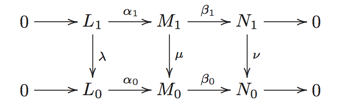

i think the best state of doing mathematics is always have the big picture in background, but in the same time, always solving details and problems, thus making real progress
give the conjectures their full meaning
meta note
- we organize by category when possible, or by topic and structure
*informal things*- we do not write linearly, but we implicitly keep a linear construction of all mathematics, though it is better we make it explicit
- using itemize
- “parent requires parts” or
class parent { def child } - “so we can define child of parent”
class parent { def child = ? } - “as parent defined, we can define child”
def child = ? - “from parent we can get”
class parent { def child = ? }ordef child = ? - “child is a kind/instance of parent” or
class extends parent/object extends parent - “under these conditions”
parent -> child
- “parent requires parts” or
meta mathematics
- doing mathematics is like exploring a very different universe
- mathematics study objects and there structure inside and maps outside. so we divide our notes normally into 3 parts
- in an oop view. an mathematical object is an
record type(the definitions, restrictions) withfunctionsbetween same type(morphisms) and between other type(functors), and it hassubtyping - when study the structure, we have a bunch of methods, like algebraic structure, topological structure
- when using the categorical view, we ask what’s the object and morphism in this category, the shape of the category, and relations between objects (not certainly be morphism), what object exists in this category
- the definition should be abstract, so you can see what’s essential in it, but must with examples, so you can feel what it is about. when proofing things, feel free to rely on your concrete examples, but always check it is rigid by abstract definitions
- it is always helpful to view the picture of mathematics as static, there are no such thing \(x+y\), it is just an element. for example, finite addition is always well defined, because we can write finitely. but it is not infinite addition. we should rely on a map from \({\mathbb{N}}\) to the group, then show how the addtion is performed and ended
- how to proof? it is sufficient to make sure you can write all rigid sentences. you can omitted the writing, but you should always make sure you can freely think rigidly. only idea is not enough
- mathematical truth can be discovered just as experimental science, we try examples see the result, make a conjuncture, and proof it
- i want to solve problems http://en.wikipedia.org/wiki/List_of_unsolved_problems_in_mathematics
- actually proofing like Coq is good. for example, every ideal is an principle ideal should really be a function
ideal(p) -> principle(p)so it reminds us to find a ideal that do not instantly an principle and use this function to convince that it is an principle - they said the Grothendieck do not solve problems, he found out a comfort space to the problem to stay at, but even working out the details is hard for me. is he had some intuition for abstraction???
- in view of “all theorems proofed is trivial”, the most important thing about machine proofed theorem is the softwares we used to proof them, so we can ask more questions
- It’s like a new toaster that comes with a 16-page manual. If you already under- stand toasters and if the toaster looks like previous toasters you’ve encountered, you might just plug it in and see if it works, rather than first reading all the details in the manual.
- i wish someday i can read the posts in this blog
- hot to compactly represent a mathematical structure?
- logic: not a implies not b \({\Leftrightarrow}\) b implies a
- the reason that we construct so many constructions is that we concrete our proof process by making them actually shown before your eyes, by constructions
- i do not know, but it seems to me that after read Lang’s Algebra and Real and Functional Analysis, you can read Algebraic Geometry
- how to solve it
- fully see what you have get. use the tools at hand. it might do not directly leads you to the solution, but anyway use it!
- see the logic of the problem. assume the solution, and see why it works, or what’s wrong with it
- i still feel abstract… i study rings, modules, but can hardly find enough examples of ring or module… i know that’s a tensor product, but can hardly know what it looks like, i cannot make mathematics into me… feeling sad. as CY said, after studying a subject, you should be able to write down all things you have meet
- recent thoughts on how to learn
- back in time i am a formalist, i learn things and in the end i found that i need to learn algebra
- and i think it is important
- but today after reading Atiyah’s article and what Huajie said, i think i should learn more geometry
- but the thing is, you must learn abstract algebra and analysis first, then you can learn some geometry..
- so finish Lang’s analysis really quick!!!
- another important thing is, about exercises
- best: to work the whole book out
- second choice: do the exercises
- i feel that every time i use Zorn’s lemma, i feel a little more depressed, because i am out of the world where mathematical entities lives
- what is good mathematics? i suddenly have a feeling that mathematics is no longer interesting anymore… why?
- on proofing
- you can just go and proof it
- a skim is nothing
- so proof or keep, or read && understand
- on theory, you should found the best place for a problem, to build the theory. you should not theory for theory’s sake. this is best method to learn mathematics
- so what is mathematics? it is know more about the mathematical world
pages on problem solving
- http://terrytao.wordpress.com/career-advice/solving-mathematical-problems/
- http://terrytao.wordpress.com/career-advice/there%E2%80%99s-more-to-mathematics-than-grades-and-exams-and-methods/
- http://terrytao.wordpress.com/2010/10/21/245a-problem-solving-strategies/
- https://plus.google.com/u/0/114134834346472219368/posts/Xdm8eiPLWZp
- The point is that even if the technique is doomed to fail, the precise point in the argument at which it fails can be very instructive, as it can delineate what portion of the problem can be handled
- http://terrytao.wordpress.com/career-advice/ask-yourself-dumb-questions-%E2%80%93-and-answer-them/
- Don’t just read it; fight it! Ask your own questions, look for your own examples, discover your own proofs. Is the hypothesis necessary? Is the converse true? What happens in the classical special case? What about the degenerate cases? Where does the proof use the hypothesis?
courses to be done
- http://math.stanford.edu/~ionel/143/143hw-w13.html
- http://math.stanford.edu/~schoen/math144
- http://math.stanford.edu/~conrad/145Page/handouts.html
- http://math.stanford.edu/~randrade/teaching/old/2012-2013/146
- http://math.stanford.edu/~lhhuang/147/
- http://math.stanford.edu/~randrade/teaching/old/2012-2013/148
- http://math.stanford.edu/~conrad/154Page
- and more
- i think in the graduate courses of Stanford, there are Analysis * 2, Algebra * 2, Geometry * 3, Algebraic Geometry * 3, MATH 243 Several Complex Variables, MATH 244 Riemann Surfaces, MATH 245 Topics in Algebraic Geometry * 3. this is about the picture
lists
- a list on Amazon
type
fix me: state of art formations?
open problem: better?
idea
i want to take homotopy type theory as the foundation of mathematics, it is a good idea, but no one knows exactly how to do it now. but nonetheless i will present ideas in it. it should be understand that, all mathematics we do now will have a good old foundation in ZFC set theory, as long as we ignore the issues with categories. so basically when we finished type theory, set theory, and category theory, we should have our formalism in mind
state of art
there are two main things in the way for adopting hott as a working foundation:
- general hit
- computation rule for \(J\) for higher inductive type and univalence axiom
type theory
- type theory
- context \(x_1: A_1, x_2: A_2,\dots, x_n:A_n\)
- \({\text{ctx}}\)-EMP \(\frac{}{\cdot {\text{ctx}}}\)
- \({\text{ctx}}\)-EXT \(\frac{\Gamma\vdash A_n: {\mathcal{U}}_i}{(\Gamma, A_n: {\mathcal{U}}_i){\text{ctx}}}\)
- judgment
- \(\Gamma {\text{ctx}}\)
- \(\Gamma\vdash a: A\)
- \(\Gamma a\equiv a': A\)
- structural rule
- inference rule this is not definition, actually all rules for types is independently defined, but share a common structure
- type rule
- introduction rule
- elimination rule
- computation rule
- derivation
- type they are higher groupoids
- universe
- \({\mathcal{U}}\)-INTRO \(\frac{\Gamma {\text{ctx}}}{\Gamma\vdash {\mathcal{U}}_i: {\mathcal{U}}_{i+1}}\)
- \({\mathcal{U}}\)-CUMUL \(\frac{\Gamma\vdash A: {\mathcal{U}}_i}{\Gamma\vdash A: U_{i+1}}\)
- function
- \(\Pi\)-FORM \(\frac{\Gamma\vdash A:{\mathcal{U}}_i\quad \Gamma, x: A\vdash B:{\mathcal{U}}_i}{\Gamma\vdash \Pi_{x:A}B:{\mathcal{U}}_i}\)
- \(\Pi\)-INTRO \(\frac{\Gamma, x:A\vdash b:B}{\Gamma\vdash \lambda (x: A). b: \Pi_{x: A}B}\)
- \(\Pi\)-ELIM \(\frac{\Gamma\vdash f: \Pi_{x:A}B\quad \Gamma\vdash a: A}{ \Gamma\vdash f(a): B[a/x]}\)
- \(\Pi\)-COMP \(\frac{\Gamma, x:A\vdash b:B\quad \Gamma\vdash a:A}{\Gamma\vdash (\lambda(x:A).b)(a)\equiv b[a/x]: B[a/x]}\)
- \(\Pi\)-UNIQ
- there are bunch of primitives, especially induction rules will confirm certain function exists
- apply \({\text{ap}}: (f: A\to B) \to (x=_A y)\to (f(x) =_B f(y))\) exists, and \({\text{ap}}(f, {\text{refl}}_x)\equiv {\text{refl}}_{f(x)}\). by path induction. so function is actually functors, required by \(J\). think like this, all primitives for inductive type will require you to respect equality, and when defining functions, we actually is always invoking a bunch of primitives, so…
- identity type
- \(=\)-INTRO \({\text{refl}}\)
- \(=\)-COMP \(J\)
open problemhow to \(J\) compute with univalence axiom?- \((x = y)\to (y = z)\to (x = z)\) exists, and \({\text{refl}}_x\cdot{\text{refl}}_x \equiv {\text{refl}}_x\)
- higher inductive type
- universe
- univalence axiom
- context \(x_1: A_1, x_2: A_2,\dots, x_n:A_n\)
basic types
- (-1)-type \({\text{isProp}}\doteq (P: {\mathcal{U}}) \to (x, y: P)\to (x = y)\)
- \((P:{\mathcal{U}})\to {\text{isProp}}(P)\to {\text{isSet}}(P)\)
fix me - \((A:{\mathcal{U}})\to {\text{isProp}}({\text{isProp}}(P))\)
- \((A:{\mathcal{U}})\to {\text{isProp}}({\text{isSet}}(A))\)
- subtype \(P\) is type family of proposition then, \(\{x: A| P(x)\}\doteq \sum_{x:A} P(x)\), it is well defined for if \(x = y\) then \((x, p_x) = (y, p_y)\)
- subuniverses \({\text{Set}}_{\mathcal{U}}\doteq \{s: U| {\text{isSet}}(s)\}\), \({\text{Prop}}_{\mathcal{U}}\), \({\text{Set}}_{{\mathcal{U}}_i}\to {\text{Set}}_{{\mathcal{U}}_{i+1}}\) is not equivalence
- exclude in the middle \((P:{\text{Prop}}_{\mathcal{U}}, a: P)\to (a + \lnot a)\)
- propositional truncation for all type \(A\) we have \(\|A\|\), and if \(x:A\) then \(|a|:\|A\|\) and \(x, y: \|A\|\) then \(x = y\)
- axiom of choice \((X: {\text{Set}}, Y: X\to {\text{Set}}_{\mathcal{U}})\to (\coprod _{x:X}\|Y(x)\|\to \|\coprod_{x:X} Y(x)\|)\)
- \((P:{\mathcal{U}})\to {\text{isProp}}(P)\to {\text{isSet}}(P)\)
- contractible type \(\sum_{x: A}\coprod_{x:A}(a = x)\)
- 0-type \({\text{isSet}}\doteq A: U_i\to (x, y: A)\to (p,q: x = y)\to (p = q)\)
- natural number \({\mathbb{N}}\doteq (0: {\mathbb{N}}, s: {\mathbb{N}}\to {\mathbb{N}})\)
references
- ref-truth An Introduction to Mathematical Logic and Type Theory
- ref-hott Homotopy Type Theory
- ref-cmu-course http://www.cs.cmu.edu/~rwh/courses/hott
- ref-ias http://uf-ias-2012.wikispaces.com/Higher+Inductive+Types
category
category
category
- category
- object a set
fix me: this is classical- think a category kind of subuniverse
- morphism a set of functions
- domain
- codomain
- identity morphism \(\forall f: A\to B: {\text{id}}_B \circ f = f = f \circ {\text{id}}_A\)
- identity, it is not identity type, it should be refl, isomorphism is identity type
- left inverse. right inverse. inverse
- unique. if one, must be it, if two, \(a= ab = b\)
- \(ff = f\) is not sufficient: constant map, algebraic inverse
- isomorphism two morphism such that diagram
id_A A f/g B id_Bcommute- section of \(f: X\to Y\) is \(g\) such that \(f\circ g={\text{id}}_Y\)
- monomorphism \(f g = f h\) implies \(g = h\)
- if \(f: A\to B\) has a left inverse \(g: B\to A\), \(g f = id_A\), then \(f\) is split monomorphism, and \(g\) is a retraction of \(f\), and \(g\) is epimorphism. it shows that the idea of left/right inverse is useful sometimes
- example of non-reverse monomorphism, subgroup of simple groups
- you should think that two map before a monomorphism, then the later structure is compressible, you can study the structure of two map to show things about the two composite
- epimorphism
- endomorphism maps to self
- automorphism endomorphism and isomorphism
- associative composition law of morphism
- exists identity morphism
- connected category
- object a set
category category
- category of category, \({\mathcal{Cat}}\) or all small categories
fix me- it is an 2-category
fix me - object category
- morphism functor preserve identity morphism and law of composition \(F({\text{id}}_x) = {\text{id}}_{F(x)}\), \(F(g\circ f) = F(g) \circ F(f)\)
- it preserve all commuting diagrams
- this is not sufficient, consider a functor maps to a constant and a constant map
- identity morphism identity functor
- isomorphism
- full and faithful if the \({\mathcal{C}}(X, Y)\to{\mathcal{D}}(F(X), F(Y))\) is surjective/injective
- it is not required to be injective/surjective in objects
- full subcategory
- concrete category and concretizable \(({\mathcal{C}}, U:{\mathcal{C}}\to\mathcal{Set})\) and \(U\) is faithful functor
- in concrete category, every injective function is monomorphism, same for epimorphism
- example of non concretizable category, homotopy space
- it preserve all commuting diagrams
- equivalence of category Wikipedia. it is two map in \({\mathcal{Cat}}\) such that …
- \({\Leftrightarrow}\) essentially surjective and full and faithful
- skeleton category
- injection functor \(J: \text{sk}\mathcal{l}\to \mathcal{l}\)
- inverse functor. you know~
- think you self what an isomorphism of category is, it is like \(GF={\text{Id}}_{\mathcal{C}}\), \(FG={\text{Id}}_{\mathcal{D}}\), then equivalence of category weaken this condition by replace \(=\) with natural isomorphism
- like isomorphism, you should always focus on which arrows you are dealing with, not merely they are equivalence
- law of composition function composition
- product category
- monomorphism injective on both object and morphisms
- epimorphism see this paper
- dual category
- contravariant
- example: \(\mathcal{Top}\to \mathcal{Ring}\) take a space \(T\) to the ring of real valued continuous functions on \(T\), then a continuous function between \(X\) and \(Y\) will pull back a function \(a: Y\to{\mathbb{R}}\) to \(b: X\to{\mathbb{R}}\), so contravariant
- contravariant
- it is an 2-category
functor category
- comma category \((T\downarrow U)\), \(T:{\mathcal{D}}\to{\mathcal{C}}\), \(U:\mathcal{A}\to{\mathcal{C}}\)
- object \((D, f, A)\), \(f: T(D)\to T(A)\)
- morphism \((f_T, f_U)\in ({\mathcal{D}}, \mathcal{A})\), such that the digram
T(f_T) * f_1 = f_2 * U(f_U)computes - is is used to define several important constructs
- arrow category \(({\text{Id}}\downarrow {\text{Id}})\)
- slice category \(({\text{Id}}\downarrow x)\)
- product in slice category can be viewed as pullback
- coslice category \((x\downarrow {\text{Id}})\)
- category of functors \({\mathcal{D}}\to{\mathcal{C}}= {\mathcal{C}}^{\mathcal{D}}\)
- object functor
- morphism natural transform for \(T,U:{\mathcal{D}}\to{\mathcal{C}}\), \(\tau: {\mathcal{D}}\to (T\downarrow U)\) such that \(P\circ \tau = Q\circ \tau = {\text{Id}}_{\mathcal{D}}\)
- isomorphism natural isomorphism we usually use \(\cong\) as the notation
- if \(\alpha_A\) is isomorphisms, then we have natural isomorphism
- isomorphism natural isomorphism we usually use \(\cong\) as the notation
- law of composition you can see it
universal arrow
- universal arrow initial in comma category \((x\downarrow U:{\mathcal{D}}\to{\mathcal{C}})\), like correlated line and point, and morphism as morphism in \({\mathcal{D}}\)
- universal arrow is unique up to isomorphism, so is colimit and so is limit
- example: forgetful functor from monoid \(\mathcal{Mon}\) to \(\mathcal{Set}\), every set has a universal arrow, by freely generate words in the monoid
colimit and limit
- diagram
- a \(\mathcal{D}\)-shaped diagram in \(\mathcal{C}\) is a functor \(F: \mathcal{D}\to \mathcal{C}\)
- \(\mathcal{D}[\mathcal{C}]\) is the category of diagrams
- diagonal functor \(\Delta:{\mathcal{C}}\to {\mathcal{C}}^{\mathcal{D}}\)
- object \(C\in {\mathcal{C}}\) to constant diagram \({\mathcal{D}}\to{\mathcal{C}}\)
- morphism natural transform of them, actually any morphism between \(C_1\) and \(C_2\) will do
- colimit for functor \(J:{\mathcal{D}}\to{\mathcal{C}}\) universal arrow from \(J\) to diagonal functor \(\Delta:{\mathcal{C}}\to{\mathcal{C}}^{\mathcal{D}}\). mapping out. the universal arrow is actually a set of arrows, see the picture
- initial
- coproduct
- coequalizer
- pushout
- coproduct + coequalizer \({\Rightarrow}\) pushout
- cocomplete
- have all colimits
- generalized coproduct and coequalizer is sufficient

- limit mapping in
- preserve colimits preserve limit and cone
- cocontinuous preserve colimits
- continuous preserve limits
filtered colimit
fix me
adjoint
- if every element of \({\mathcal{C}}\) has an universal arrow, then we can define a reverse functor \(F\), and we can show universal arrows exists in \({\mathcal{D}}\), and another natural transform
- see ref-category-notes for diagram
f| A/B =u_A/u_B= UFA/ UFB | UFf - check preserve id: ok + unique = defined
- check preserve law: think by “moving equal path on graph”
- and the arrows is an natural transform from \({\text{Id}}_{\mathcal{C}}\) to \(F\)
- though we do not know if the initial is unique, we can still define it
- see ref-category-notes for diagram

- adjuction of category \(F\dashv U\), \(U\) is right adjoint, \(F\) is left adjoint
- def a from ref-category-notes for \({\mathcal{C}}\) and \({\mathcal{D}}\), \(F:{\mathcal{C}}\to{\mathcal{D}}\), \(U:{\mathcal{D}}\to{\mathcal{C}}\), a bijection \(\varphi_{C, D}: {\mathcal{D}}(FC, D) \cong{\mathcal{C}}(C, UD)\) such that \(\varphi(k\circ g) = Uk\circ \varphi(g)\) and …
- in Wikipedia, it says that it means optimization
- def b \(\eta:{\text{Id}}_{\mathcal{C}}{\Rightarrow}UF\) and \(\epsilon: FU{\Rightarrow}{\text{Id}}_{\mathcal{D}}\) such that the diagram holds
- left adjoint. right adjoint
- left adjoint is cocontinuous, right adjoint is continuous
fix me
- left adjoint is cocontinuous, right adjoint is continuous
- \(\mathcal{Ab}(F(S), A) \cong\mathcal{S}(S, U(A))\) between the functor take set to freely generated abelian group and the functor that from the group to the set. it means the the morphisms in one category can be fully described by morphisms in another a map from \(S\) to \(U(A)\) fully describe the homomorphisms from \(F(S)\) to \(A\)
- it further generalize equivalence of category by replace natural isomorphism by certain natural transformation
- from nLab we know that we should have a better understanding with higher order category
fix me: when you know higher order category, so i should think moving this section again - adjunction induce two natural transformation unit of adjunction \(eta: {\text{Id}}_{\mathcal{C}}{\Rightarrow}UF\) and counit of adjunction \(\epsilon : FU{\Rightarrow}{\text{Id}}_{\mathcal{D}}\), such that triangular identities holds
- and \(\varphi\) is determined by \(\eta\) and \(\epsilon\)
- adjoint functor determine each other up to isomorphism

monads
fix me: finish the lecture
abelian category
- additive category
- \({\mathcal{A}}(E, F)\) is abelian group
- law of composition is bilinear
- a zero object \(0\), such that \({\mathcal{A}}(0, E)\) and \({\mathcal{A}}(E, 0)\) has precisely one element
- finite products and finite coproducts exists
- kernel of \(E\xleftarrow{f}F\). a morphism \(E'\to E\) such that \(0\to {\mathcal{A}}(X, E')\to{\mathcal{A}}(X, E)\to{\mathcal{A}}(X, F)\) is exact for all \(X\)
- cokernel of \(f\). a map \(F\to F''\) such that \(0\to {\mathcal{A}}(F'', X)\to {\mathcal{A}}(F, X)\to{\mathcal{A}}(E, X)\) is exact for all \(X\)
- additive functor
- abelian category
- kernel and cokernel exists
- if \(f:E\to F\) is a morphism with kernel \(0\), then \(f\) is kernel of its cokernel. if \(f: E\to F\) is morphism with cokernel \(0\), then \(f\) is the cokernel of its kernel. a morphism with \(0\) kernel and cokernel is isomorphism
- subobject
- quotient object
- exact functor functor preserve exact sequence, or equally short exact sequence
- left exact functor preserve \(0\to A\to B\to C\)
- example: vector bundles over a topological space
Yoneda lemma
higher category
references
- general category theory
- ref-youtube-category-video http://simonwillerton.staff.shef.ac.uk/TheCatsters
- i understand limit from here
- ref-category-awodey Category Theory, Awodey
- my intro book
- ref-category-notes Category Theory Lecture Notes
- excellent! this will be great for review, but i do not know if one can read this first
- most notes here is adapted from these notes
- ref-category-for Category Theory for Working Mathematician
- ref-youtube-category-video http://simonwillerton.staff.shef.ac.uk/TheCatsters
set
the theory is classical, we do not use the definitions founded in ref-hott
basic set theory
- \({\mathcal{Set}}\)
- object sets in \({\text{Set}}_{\mathcal{U}}\)
- ZFC set theory
- extensionality axiom
- pairing axiom
- union axiom
- power axiom
- function is defined in ZFC using this
- replacement axiom
- infinity axiom
- regularity axiom has \(\in\)-minimum element
- morphism function
- image
- isomorphism bijection
- monomorphism injection
- epimorphism surjection
- product Cartesian product
- coproduct disjoint union
- subtype subset
- set limit
- \(\lim\inf A_i = \bigcup_i \bigcap_{j >=i} A_j\), in all but finite
- \(\lim\sup A_i = \bigcap_i \bigcup_{j >=i} A_j\), in infinite sets
- \(\lim A_i\)
- cover
- \(\mathcal{Set}_*\)
- object pointed set
ordering
- \({\mathcal{Pos}}\) subcategory of \({\mathcal{Set}}\)
- lattice a partially ordered set such that any two element has sup and inf
- \({\mathcal{Los}}\) subcategory of \({\mathcal{Pos}}\)
- object linear ordering
- \(\forall p,q: p < q \lor p = q \lor q < p\)
- morphism
- increasing function which is just order-preserving function
- decreasing function
- strict increasing function
- strict decreasing function
- object linear ordering
- subcategory of \({\mathcal{Los}}\)
- object well ordering linear ordering that every non-empty subset has least
- morphism
- increasing function of well-ordering \(f(x) \ge x\)
- isomorphism \(W_1\) and \(W_2\) only has unique isomorphism
- no well ordered set is isomorphic to it’s initial segment
- automorphism the only automorphism is \(id\)
- for \(W_1\) and \(W_2\) or they are isomorphic, or one is isomorphic to other’s initial segment
- initial segment
- initial ordinal numbers
- by axiom of choose every set can be well-ordered
ordinal
- transitive set \(T\) such that \(x\in T{\Rightarrow}x\subset T\)
- ordinal number \(\mathcal{Ord}\) transitive set and well ordered by \(\in\)
- \(\emptyset\) is ordinal
- if \(\alpha\) is ordinal, \(\beta\in \alpha\) then \(\beta\) is ordinal
- proof by chaining…
- \(\alpha \subset \beta{\Rightarrow}\alpha\in\beta\)
- either \(\alpha \subset \beta\) or \(\beta\subset\alpha\)
- define the order by \(<\) is \(\in\), so $ is linear ordered and is well ordered
- … a lot thing
- successor ordinal and limit ordinal
cardinal
- cardinal an ordinal such that \(\forall b < a: |a| \neq |b|\)
- what it means by: \(|X| = |Y|\) and \(|X| < |Y|\)
- \(|X| < |P(X)|\)
- \(|A| \leq |B| \land |B| \leq |A| {\Rightarrow}|A| = |B|\)
- cardinal arith
- \(a + b = |A\cup B|\) disjoint
- \(a \cdot b = |A\times B|\)
- \(a^b = |A^B|\)
- \(|P(A)| = 2^{|A|}\)
- finite cardinal
- finite and infinite
- all aleph is limit ordinal
- \(|\mathbb{R}| = 2^{\aleph_0}\)
- continuum hypothesis \(2^{\aleph_0} = \aleph_1\)
reference
- ref-set-jech Set Theory, Thomas Jech
algebra
- law of composition we define here. because usually they are used in classical sense, it is just map \(S_1\times S_2\to S_3\)
- associative \(abc = a(bc)\)
- you can insert any parentheses
- commutative \(ab = ba\) it seems then we must have \(S_1 = S_2 = S_3\)?
- example of non-associative loc: \(-\) for integer
- associative \(abc = a(bc)\)
group-likes
monoid
- \({\mathcal{Mon}}\)
- object monoid \((S\in{\mathcal{Set}}, *:S\times S\to S, e\in S)\)
- unit element \(\forall a\in S: ae = ea\)
- unique. \(e = ee' = e'\)
- associative law of composition \(abc = a(bc)\)
- product of zero element. proof well defined trivial
- product of infinite but almost all zero set. proof well defined trivial
- \(\forall m,n\in {\mathbb{N}}: a^n a^m = a^{m + n}\)
- unit element \(\forall a\in S: ae = ea\)
- morphism monoid homomorphism \(f(e) = e\), \(f(ab) = f(a) f(b)\)
- submonoid
- object monoid \((S\in{\mathcal{Set}}, *:S\times S\to S, e\in S)\)
groupoid
- \({\mathcal{GP}}\)
- object groupoid
- connected groupoid
- can be viewed as connected category, then the groupoid viewed as a category will have skeleton category one element with full isomorphism
group
idea
- group is about symmetric
group
- \({\mathcal{Grp}}\) subcategory of \({\mathcal{Mon}}\)
- object group
- inverse \(xy = yx = e\)
- unique
- \(n,m \in \mathbb{Z}\), \(a^n a^m = a^{n+m}\)
- power arithmetic is well defined
- actually left unit and left inverse is sufficient
- inverse \(xy = yx = e\)
- morphism group homomorphism inheritance monoid homomorphism, and only \(f(ab) = f(a)f(b)\) is sufficient
- kernel \({\text{ker }}f\) is a subgroup
- kernel is normal. and normal is kernel. first is trivial by definition. second is by proofing that there is a group structure on the cosets, this is trivial by \(xHyH = xyH\)
- image \({\text{im }}f\) is a subgroup
- because we know that it contains the unit
- and just from \(f(ab) = f(a)f(b)\) we know that it is closed by multiplication and inverse
- group morphism structure is determined by values on generator. there is two kind of things: group morphism is not defined by values on generator, because it might not be well defined, but it is determined by values on generator, when using this word, we know prior it is a group morphism
- monomorphism
- \({\Leftrightarrow}\) kernel is trivial
- \({\Leftrightarrow}\) injective
- injective \({\Rightarrow}\) kernel and monomorphism is trivial, kernel to injective by unique inverse, monomorphism to kernel is by considering two map \({\mathbb{Z}}\to C_a\)
- epimorphism
- \({\Leftrightarrow}\) surjective
- surjective is certainly epimorphism, a proof for reverse if here, which also works in \({\mathcal{FinGrp}}\)
fix me: proof it
- surjective is certainly epimorphism, a proof for reverse if here, which also works in \({\mathcal{FinGrp}}\)
- the cokernel is not well defined here, but is well defined for abelian groups
- \({\Leftrightarrow}\) surjective
- isomorphism
- \({\Leftrightarrow}\) bijective
- \({\Leftrightarrow}\) monomorphism + epimorphism
- isomorphism is monomorphism and epimorphism so it is bijective. if it is bijective, we can define the inverse map by just function inverse
- morphism and order of group element
- kernel \({\text{ker }}f\) is a subgroup
- order of group element
- this is kind of like group in algebraic topology, they have something to do with morphisms
- formula for \(|g^m|\)
- the group order divides each other, this is trivial by the index theorem
- see also cyclic group
- subgroup inclusion is homomorphism
- or closed
- group multiplication always give an isomorphism as set, multiple by inverse is the inverse map
- coset. left coset. right coset
- proof that it is equivalence relation
- cosets have same cardinality, no matter left or right
- \((G:H)\) index of subgroup the cardinal of cosets
- number of left cosets and right cosets is same, by make a bijection \(aH \to Ha^{-1}\)
- \((G:H)(H:K) = (G:K)\)
- example: group of prime order is cyclic. we should always see what subgroup a group have to determine their structure
- decomposition of group into subgroups \(H\cap K = \{e\}\land HK = G\land hk = kh\) then \(G \cong K\times H\)
- example: \(C_6 = C_2 \times C_3\), with \(C_2 = \{0, 3\}\), \(C_3 = \{0, 2, 4\}\), actually it is not obvious that \(HK = G\), but because it is abelian, \(hk = kh\) is obvious
- normal subgroup \(gN = Ng\)
- closed under intersection
- closed by inverse map, but not morphism!
- normalizer \(N_H\) is a group
- if \(K\subset N_H\) then \(KH\) is a subgroup
- Weyl group \(W_H = N_H / H\)
- smallest index subgroup in finite group is normal
- how to consider this? if you consider what things can be a morphism in group, then you will notice that only when we make the group structure fuzz… kind of. then you want to make certain subgroup into a point, because subgroups has the good property of having boundary of coset. but \(aHbH = abH\) will require that \(aH = Ha\) for it
- index \(2\) subgroup is normal, i think this can be shown quickly by cosets
- Dedekind group every subgroup is normal
- Hamiltonian group Dedekind group but not abelian group. example: quaternion group
- centralizer of \(S\) \(Z_S\). \(zsz^{-1} = s\)
- of \(G\), center of group is a normal subgroup
- quotient group \(G/H\). and if \(H\) is normal, the result is also a group
- exact sequence of group shape like this: \(>>>>>>\)
- generate \(G = \langle S \rangle\) seems to be the inner structure of a group
- finitely generated
- transposition generate symmetric group \(S_n\)
- free group \(F(A)\). the words thing. on set \(A\). the universal arrow!
- product exists. we show that the product is a group by defining pointwize multiplication, then we define the universal arrow. we show that it is a morphism and it is a product, then we show that it is unique
- canonical embedding into the product
- coproduct the free product \(G*H\)
- the insertion map must be injective
- and all elements in the coproduct can be expressed as \(i_1(g_1)i_2(g_2)\cdots i_k(g_k)\)
- we can show this only using universal properties. the generated subgroup in coproduct is a subgroup, and we has injections in to the subgroup, then we have an universal arrow from coproduct to this subgroup, which can be viewed as an universal arrow from coproduct to coproduct with image the subgroup, then we have two arrow, the other one is \({\text{id}}\), so the subgroup is the coproduct~!
- consider the category of \((f, G)\) such that \(f: S\to G\) with morphisms group homomorphisms \(\lambda\) such that \(\lambda \circ f_1 = f_2\), a free group is an initial in this category
- free group exists and generated by \(S\), the \(f\) is injective
fix me: this proof is rather dumb... why can't just use the words thing? - \(F(|G|)\to G\), then we see that every group is a factor group of some free group
- coproduct exists
fix me: reason same as above - \(\{G_i\}\) a family of subgroup such that 1. generate \(G\), 2. if \(x=g_{i_1}g_{i_2}\cdots g_{i_k}\) with all \(g_{i_v} \neq e\) and \(i_v \neq i_{v+1}\) then \(x \neq e\) (every words is not \(e\)). then \(G\) is coproduct
- we do not proof it is coproduct, but by show an isomorphism from existing coproduct into it. we define the map by induced by inclusion, it is surjective from 1, and we show the kernel is trivial, if there is an element, because it is generated, we have maps back into \(G_i\), we show that they must all be \(e\), by this we show that it must be represented as \(e\), so it must be \(e\)
- \(A\), \(B\) two groups, we can construct a group with only alternating elements of them. we finally has the words thing!
- we define the finite sequence and restrict to \(\neq 1\) and alternating case, we define the product, the unit element and inverse function, we proof it is associative by induction
- see Wikipedia for more about the category of groups
- we can defined by generator and relations \(G = {\langle S, R \rangle}\) where \(R\subset F(S)\), \(G\) is \(F(S)/N\) where \(N\) is the smallest normal subgroup containing \(R\)
- pushout exists, also called free product with amalgamation, it is by coproduct and take the smallest normal group containing all \(f(a)g(a)^{-1}\)
- initial/finial the trivial group
- order of group the definition is somewhat… it is the number of elements
- commutator \(xyx^{-1}y^{-1}\), \(G^c\)
- normal, proof by blablabla
- \(G/G^c\) is commutative, proof by cosets
- all homomorphism into commutative group factor through it, proof by showing that if it maps into an abelian group, then the kernel is contained in it. then using decomposition 1
- simple group nor-trivial and no normal groups other than \({e}\) and itself
- presentation of group
- finitely presented
- world problem is undecidable…
- finitely presented
- inverse limit of group given \(\{(G_n, f_n)\}\), the sequences \(x = (x_0, x_1, \dots)\) that satisfy \(x_0 = f_1(x_1)\) etc, form a group

- it can also define on a general directed family of groups
- profinite group inverse limit of finite groups
- Cauchy sequence in group. null sequence in group. completion of group
fix me: is this completable with norm completion? if it is, read this...
- examples
- symmetric group \(S_n\)
- \((S_n:1) = n!\)
- we define the sing homomorphism \(S_n\to \{1, -1\}\)
- and the kernel is alternating group \(A_n\)
- we proof that \(S_n\) is not solvable by showing that this kind of abelian tower will have all 3-cycles
- \(A_n\) is generated by 3-cycles. we proof all even product of transpositions is generated by it
- \(n\geq 5\), all 3-cycles are conjugate in \(A_n\)
- \(n\geq 5\), \(A_n\) is simple
fix me: proofs
- \(({\mathbb{Z}}/p{\mathbb{Z}})^*\) is a group. proof is trivial
- cyclic group \(C_n\). isomorphism to \({\mathbb{Z}}\) or \({\mathbb{Z}}/n{\mathbb{Z}}\), the additive group!!!
- infinite cyclic group has exactly 2 generator
- finite cyclic group has generators the relative prime ones
- let \(p\) relative prime, and \(k\) smallest such that \((a^p)^k = e {\Rightarrow}(a^k)^p = e\) we show that k must be order of the group, because we do not have such kind of subgroup. if it is not relative prime, we show that it cannot generate
- the automorphisms is fully described by map on generator
- trivial
- if \(p\) is prime, then \((({\mathbb{Z}}/p{\mathbb{Z}})^*, \cdot)\) is cyclic
- it is an abelian group, so there should be one maximal order element \(g\), so \(h^{|g|} = 1\) for all \(h\), but we have \(x^d = 1\) at most have \(d\) solutions in \({\mathbb{Z}}/p{\mathbb{Z}}\)
fix me, so \(|g|\geq p\)
- it is an abelian group, so there should be one maximal order element \(g\), so \(h^{|g|} = 1\) for all \(h\), but we have \(x^d = 1\) at most have \(d\) solutions in \({\mathbb{Z}}/p{\mathbb{Z}}\)
- \(\text{gcd}(m, n) = 1{\Rightarrow}C_{mn} = C_m \times C_n\)
- to show right is cyclic, we define \(C_{mn}\to C_m\times C_n\), we show that only that… and we show that it is surjective. we are done??
- dihedral group of \(n\) side polygon \(D_{2n}\)
- \(D_6 = S_3\), but normality it is not, because geometry restrictions
- \(D_8 = {\langle \sigma, \alpha| \sigma^4 = \alpha^2 = e, \sigma\alpha\sigma^{-1} = \sigma^3 \rangle}\)
- quaternion group
- it is kind of likes cross product \(ij = k\), \(jk = i\), \(ki = j\), \(ji = -k\), \(kj = -i\), \(ik = -j\)
- it is associative. it can be proofed by just think the kinds of 3 pairs
- all subgroup is normal. this is easy, because it lacks subgroups…
- but it is not abelian, and thus…
- symmetric group \(S_n\)
- object group
- decomposition of group morphism
-
- we define the map by \(aH\to f(a)\) because for all \(y\in H\), \(f(xy) = f(x)\) we see it is a well defined map, then we see that it is a morphism, and it is unique
- \(f: G\to G'\) and \(H'\) normal in \(G'\) then \(f^{-1}(H')\) normal in \(G\) and \(\bar{f}:G/H\to G'/H'\) is injective, if \(f\) is surjective, it is an isomorphism
- we show it is normal. and show it is associative, and injective, by triviality
- decomposition 0 \(\frac{G_1\times G_2}{H_1\times H_2}\cong\frac{G_1}{H_1}\times\frac{G_2}{H_2}\)
- first we proof that \(H_1\times H_2\) is normal, this is trivial, then we show that if \(g_i H_1\) and \(g_j H_2\) then \((g_i, g_j) H_1\times H_2\), we define the map and show it is a morphism, then we show the kernel is trivial and it is surjective, so it is an isomorphism
- decomposition 1 \(\frac{G/H}{N/H}\cong\frac{G}{N}\), \(H\subset N\) normal
- first all \(A/B\) is well defined, then we see that left is well defined. for \(G/H\) and \(G/N\) we define a map \(gH\to gN\), we see that it is a morphism, then we show that the kernel is \(N/H\)
- decomposition 2 \(\frac{H}{H\cap K}\cong \frac{HK}{K}\), \(H\subset N_K\), so \(HK = KH\) is subgroup, and \(H\cap K\) is normal in \(H\)
- proof that \(H\cap K\) is normal in \(H\), \(hk = k_2 h\) and \(k \in H\) so \(k_2 \in H\) so normal. we define the map \(h\to hK\), then we show that it is morphism and it’s kernel is \(H\cap K\)
- this means you have normalizer, you can add/subtract the irrelevant dims to the problem. notice that \(K\) is not always subgroup of \(H\)
- butterfly lemma
- \(U\), \(V\) subgroup of \(G\)
- \(u\), \(v\) normal subgroup of \(U\), \(V\)
- \(\frac{u(U\cap V)}{u(U\cap v)}\cong\frac{(U\cap V)v}{(u\cap V)v}\cong\frac{U\cap V}{(u\cap V)(U\cap v)}\)
- proof of the group is normal. if \(a\in U\cap V\) we have \(a(u\cap V) = (u\cap V)b\) where \(b\) exists and is in \(U\) because \(u\) normal in \(U\), and it is in \(V\) because \(V\) is closed. so it is normal
- then we use decomposition 2, we should show that \(((u\cap V)v)\cap(U\cap V) = (u\cap V)(U\cap v)\), which should be trivial. it is tedious and not instructive, but that’s kind of the fact of my mathematical ability now
-
- group towers
- normal tower. abelian tower. cyclic tower
- solvable tower has an abelian tower
- finite + solvable = has an cyclic refinement
- by induction and using decomposition 2
- \(H\) normal (\(G\) solvable \({\Leftrightarrow}\) \(G/H\) and \(H\) is solvable)
- right to left is trivial. \(H\) solvable: construct \(H_i\) like in textbook, we show a normal tower, then we show a morphism, then we show injective then we show abelian. and then we show that \(G/H\) is solvable. we show that \(G_{i+1}H\) normal in \(G_i H\), by \(hg_iG_{i+1}H g_i^{-1}h^{-1} = hG_{i+1} H h^{-1} = hG_{i+1}H = h H G_{i+1} = G_{i+1} H\), then we show that \(G_i H/ G_{i+1}H\to G_i/G_{i+1}\) is injective, 1. show that cosets in left is just \(g_ihHG_{i+1} = g_iG_{i+1}H\) represented by \(g_i\), 2. define the map be \(g_i G_{i+1} H \to g_i G_{i+1}\), then it is morphism, and it is injective, 3. using decomposition 1, we show that it isomorphism to a tower of \(G_i H/ H\) with \(G_0H/H = G/H\) and \(G_rH/H = H/H\), so proofed
- lemma: \(h(H\cap G) = H\cap hG\). it is used to show above injective
- Schreier theorem two normal tower ending with trivial group have equivalent refinements
- you should have a picture of the corresponding groups in the refined tower
- Jordan-Hölder simple tower is canonical
- by Schreier theorem, we find the refinement and show that actually it is nothing refined
finite group
- \({\mathcal{FinGrp}}\)
- finite group
- when dealing with finite group, it is just ok to think of what multi table it have, and think how many distinct elements you have
- \(p\)-group finite group of order \(p^n\) where \(p\) prime
- \(p\)-Sylow subgroup
- finite abelian group \(G\) has subgroup order \(p\) dividing \(|G|\)
- easy if you know facts about finite generated abelian group
- \(p\)-Sylow group exists
- the proof is standard, i think i cannot come up with a proof of this myself, because i am too dumb… just repeat it myself… if \(G\) has order \(p^n\) we are done, so we assume not. we consider proper subgroup of \(G\), if there exists a subgroup \(H\) such that \(p^n\) divides \(|H|\) then we are done, because we can induction. suppose not, then we have in \(|G| = \sum (G:G_x) = |Z| + \sum (G:G_x)\) the right must all dividable by \(p\), so is \(|Z|\). and we can construct a group of order \(p\) in \(Z\). and we can factor it to induction again, and project back and show that the group has order \(p^n\)
- \(H\) a \(p\) group actioning on finite set \(S\), then number of fix points is \(|S|\) mod \(p\)
- using the orbit decomposition formula, \(|S| = \sum (H: H_{s_i}) = |F| \sum (H:H_{s_1})\) the right part must divide \(p\), so \(|S|-|F|\) divides \(p\)
- \(p\) group is contained in some \(p\)-Sylow group
- all \(p\)-Sylow group is conjugate
- number of \(p\)-Sylow group is \(1 \mod p\)
- we follow the proof by Lang. first if \(H\) is contained in normalizer of \(P\), then \(H\subset P\), this is proofed by seeing the prime indexes, we used the condition \(p\)-Sylow as maximal \(p\). the next part is by taking \(S\) all conjugate class of \(P\) in \(G\), then we have \(|S|\) is not divisible by \(p\), then we have \(H\) also operate on \(S\) and it cannot have one fixed point, which means it is contained in some \(aPa^{-1}\). by taking \(H = aPa^{-1}\) we show that it is in \(S\). and \(H\) has only one fixed point, showing that mod 1.
- the proof is essentially number theoretic, so the particular group structure is caused by finiteness and number theory
- \(p\)-group has non-trivial center, thus solvable, and also has cyclic tower
- it is again a trivial application of class formula
- smallest prime index group is normal
- proof: if \(N_H=H\) we have \(G\) operates on \(G/H\) and so we have a subgroup into a group of order \(p!\) and we show that the kernel must be \(H\), i.e. \(hgHg^{-1}h^{-1} = gHg^{-1}{\Rightarrow}g^{-1}hg \in H\)
- order \(pq\), \(p\neq q\) and primes, then solvable. trivial by above lemma
abelian group
- \({\mathcal{Ab}}\)
- object abelian group
- morphism
- example: \(n\) power map exists, because commutative, the deeper result is that abelian group is essentially an module over \({\mathbb{Z}}\)
- homomorphism in \({\mathcal{Ab}}\) is again a abelian group
- product finite case is direct sum
- coproduct direct sum \(G\oplus H\), only finite non zero
- proof that is is coproduct. we should be using a infinite sum now, and etc.
- pullback is the subgroup of \(A\times B\) such that \(f(a) = g(b)\)
- structure of free abelian group \(F^{ab}(A)\). \(\bigoplus_{i\in A} {\mathbb{Z}}_i\)
- base non-empty and \(A\) is unique expressed \(x =\sum x_i e_i\) for \(x_i\in {\mathbb{Z}}\) almost all zero
- the adjuction functor
- \(f:A\to B\) surjective and \(B\) is free, then we can find \(C\) free such that \(A = {\text{ker }}f \oplus C\)
- proof using base
- subgroup is also free abelian group, and has smaller cardinal base
- special case of free module over principal entire ring
fix me
- special case of free module over principal entire ring
- structure of torsion element forms a torsion group. \(A = \bigoplus _p A(p)\) where \(A(p)\) is the subgroup of elements of order \(p^n\). not necessary finite
- we proof by showing the map in surjective, injective by showing the kernel is trivial. surjective using the relative prime decomposition
- abelian \(p\)-group isomorphism to product of cyclic \(p\)-groups
fix me
- an easy exercise. a non cyclic finite abelian group must contain some \(C_p\times C_p\)
- proof by above. suppose not cyclic, if there must be multiple \(A(p)\) and one of them has multiple \(p\)-group, because if it is \(p\)-group and not cyclic, it must has multiple cyclic decomposition, and we can pick a \(C_p\times C_p\) in it. so it must contain multiple \(A(p)\), if it everyone has one \(p\)-cyclic group, then itself is cyclic. so one of them must contain multiple \(p\)-cyclic group. proofed again
- proof by hand. i do not want to proof again, this is basically the relative prime thing
- in abelian group the max finite order divide each finite order
- proof see exercise in ref-algebra-0, it is by contradiction
- can we proof it using the structure of torsion group? i think a problem is that there might be no maximal order at all. we proof that the cyclic group all have order smaller than one number, if not, we have no maximal order element. so we can pick the maximal order of each one, and proofed
- finitely generated abelian group \(A = A_{\text{tor}}\oplus B\) where \(B\) is free
- finitely generated torsion abelian group is finite
- proof is trivial
- finitely generated torsion-free abelian group is free
- the proof is by picking a maximal set of independent generators and so any set of this plus another generator is linearly dependent, so \(my\in B\) where \(B\) free. so we define \(A\to mA\to B\subset A\), the first is injective because it is torsion free, the second is injective because it’s the inclusion map, so we have the \(A= B\)
- we proof that \(A/A_{\text{tor}}\) is torsion free, thus free. to show direct sum
fix me
- rank of \(A\)
- an example of abelian group that do not has this structure is \({\mathbb{Q}}\), here, it is torsion-free but not free. same for \({\mathbb{R}}\) because it has one non-free subgroup
- finitely generated torsion abelian group is finite
- dual group for \(A\) of exponent \(m\), \(A^*\)
- for \(A\), \(B\) of same exponent \(m\), \(f: A\to B\), we define \(f^*:B^*\to A^*\) by \(f^*(\chi) = \chi \circ f\)
- \({\text{id}}^* = {\text{id}}\)
- \((f\circ g)^* = g^*\circ f^*\)
- \((A\times B)^* \cong A^*\times B^*\)
- the dual things is a special case of a module, study it there
group action
- a left action of group \(G\) on \(A\) in category \({\mathcal{C}}\), is a morphism \(\sigma:G \to {\text{aut}}_{\mathcal{C}}(A)\)
- alternative on \(S\in {\mathcal{Set}}\)
- \(es = s\)
- \(gfs = (gf) s\)
- this is auto automorphism! group has inverse!
- faithful action when we view group as an single element category, it is just faithful
- conjugate subgroup \(B = xAx^{-1}\)
- the kernel this map is center
- there are a lot of automorphism that is not working by conjugation!!
- isotropy of point \(s\), \(G_s\). \(\{g|gs = s\}\)
- isotropy groups is conjugate if \(\exists gs = s'\)
- so faithful action’s isotropy is always \(\{e\}\)
- fixed point of group action \(s\) such that \(G_s = G\)
- orbit of \(s\), \(Gs\)
- transitive action, \(\forall s, s', \exists g: gs = s'\) or group is single orbit
- if \(H\) is subgroup, then \(G/H\) is transitive \(G\)-set (by \(G\)-set we means an action)
- alternative on \(S\in {\mathcal{Set}}\)
- \(|Gs| = (G:G_s)\)
- number of conjugate group of \(H\) is equal to \(G:N_H\)
- orbit decomposition formula \(S = \bigcup Gs_i\) then \(|S| = \sum_{i\in I} (G:G_{s_i})\), \(s_i\) is representative of different orbit
- class formula \((G:1) = \sum (G:G_x)\), taken from different conjugate classes. consider \(G\) action by conjugate on \(G\) viewing as an set, then… for example, when \(z\) is in center, \(G_x = G\) because all \(xzx^{-1} = z\), and it’s orbit is just \(z\)
- category of \(G\) sets
- object \(S\)
- morphism function \(f\) such that \(f(gx) = g(f(x))\)
- automorphism of \(G\)-set. \(G\) act transitively on \(S\), \(s\in S\), \(W_{G_s}\) is isomorphic to \({\text{aut}}_G(S)\) of automorphism of \(G\)-set \(S\)
- category \(\mathcal{O}(G)\) of canonical orbits
fix me: reread this para in May- object \(G/H\)
- morphism \(G\)-maps of them
- \(\alpha: G/H\to G/K\) has form \(\alpha(gH) = g\gamma K\) where \(\gamma\in G\) satisfies \(\gamma^{-1}h\gamma \in K\) for all \(h\in H\)
- the category \(\mathcal{O}(G)\) is isomorphism to \(\mathcal{G}\) with objects subgroups of \(G\) and morphisms distinct subconjugacy relations \(\gamma^{-1}H\gamma\subset G\) for \(\gamma\in G\)
- groupoid action \(T:\mathcal{B} \to \mathcal{Set}\). it is kind of taking the results of path in base space into results of end point in covering space
- for each \(b\) in \(\mathcal{B}\), \(T\) restricts to an group action on \(T(b)\)
- transitive groupoid action if for each \(b\), it is an transitive action
- for groupoid connected groupoid, if this is true for one, then true for all. because groupoid is an category with only isomorphism
exercises
from ref-algebra-lang
- for 1, 2, 3, 5, cyclic. for 4, we can show an non-abelian group must contain at least 5 elements \(\{e, a, b, ab, ba\}\)
- because it is abelian, it is cyclic or contains \(C\times C\)
- proofed above
- from the isomorphism
- Goursat’s lemma we show normal by analysis components. then we show that there is an morphism \(G\to G'/N'\) which is constructed by taking the cosets of \(H\) and map back by the cosets, the map is well defined because left is surjective and because you can check for associative. we can see that the kernel is exactly \(N\). and we show it is isomorphism by showing it is surjective by using right is surjective. this is a rather wired proof
- trivial
*see the proof in ref-algebra-course, the main thing is that every conjugate is an automorphism, but what actually conjugate means is not touched- it is certainly union of, so we proof for disjoint. we show that if one element in common, then \(HxH' = HyH'\). the second part and the third part is not proofed. the goddam misprinting!!!!. a proof see ref-algebra-course
- follow the hint. \(N\) is easy to find, and finite is easy to proof. second part is by reduce to normal case, and show that \(N\times N'\) is kernel into some finite group
- proofed above
fix me: do not understand how to construct, if it is like in 12, then what's the point of abelian?- semidirect product trivial or lazy…
fix me: the properties of semipoduct as limit? - \(H\), \(N\) normal, then \(hn = nh\) and \(H\times N\cong HN\). the second part is trivial, we proof \(xy = yx\) by first show that every element in \(HN= NH\) has unique decomposition \(xy\) and \(yx\), then if \(xy = y'x = x'y'\) we have \(x = x'\) and \(y = y'\) so \(xy = yx\)
- the first part can be shown by calculate the order of \(NH\) which must be \(|G|\). the second part is by assuming \(K = g(N)\neq N\) then \(KN\subset G\) then \((G:N) = |G|/|N| > |KN| / |N|\) cannot relative prime to \(|N|\)
*i didn’t make it out myself, see ref-algebra-course. you have \(|\bigcup G_s| \leq \sum |G_s| = |G|\) and the left is not disjoint. the right part about finite one orbit action should be remembered- assume \(\{a_i\}\) is an coset representative, then \(\bigcup_{x\in G} xHx^{-1} = \bigcup_i \bigcup_{x\in a_iH}xHx^{-1} = \bigcup_i a_iH a_i^{-1}\), because \(G = \bigcup_i a_i H\), left is not disjoint union, and right is disjoint union, so…
- for kindergarten?
- same above?
- the number of orbit of \(G\) actioning on \(S\) is the average number of fix points of an element of \(G\)
*the proof is by \(P\) actioning on \(A\), the number of fix points equal \(p\) mod \(p\) then there should be \(p\)- a \(p\)-Sylow group of \(H\) is a \(p\) group of \(G\) and then it is contained in a \(p\)-Sylow group of \(G\), \(P\), we should proof that \(P_H = P\cap H\), certainly \(P_H\subset P\cap H\), we should proof that \(P\cap H\) is a \(p\)-group, thus \(P\cap H=P_H\) by cardinality. this is a easy fact
- all \(p\)-Sylow group is conjugate
- \(P\), \(P'\) two \(p\)-Sylow group
- \(P'\subset N_P{\Rightarrow}P' = P\). because it is Sylow subgroup!
- \(N_{P'} = N_P{\Rightarrow}P' = P\). \(P'\subset N_{P'}\)
- \(N(N(P)) = N(P)\). we suppose \(a N_P a^{-1} = N_P\) then \(P\) is mapped into a conjugate subgroup of \(N_P\) but we know that there is one, so \(aPa^{-1} = P\) so \(a\in N_P\)
- a group of order \(p^2\), has a subgroup of center of order \(p\), so the cosets is cyclic and generated by some \(aP\), and thus all elements of \(G\) is some \(a^ip^j\), and it is abelian. we consider the max order of elements of \(G\), if it is \(p^2\) then \(G \cong C_{p^2}\), if it is \(p\), then we have all none \(e\) elements have order \(p\), and we have \(G\cong C_p \times C_p\)
- we use same trick as above
- it is not abelian, and normal is easy because smallest prime index
- this is easy
- fixed points, show it is abelian
- trivial
- group of order less than 60 is solvable. first, \(p\neq q\) is solvable. and \(p^2\) is abelian. and \(p^n\) is solvable. \(pqjkq\) solvable
- for \(p^2q\) with \(p < q\) we have \(q\)-group exists, and it is normal, and then it is cyclic, and then we have the factor group cyclic, thus solvable
- and by 28, we know that all \(p^2q\) is solvable, and one Sylow subgroups is normal
- so we actually only need to proof for \(24 = 2^3 3\), \(36 = 2^2 3^2\), \(40=2^3 5\), \(48 = 2^4 3\)
- by \(p^3q\) we have \(36\), \(48\) remains, proofed
- you show it should be a group of order \(12\) and have 3 \(2^2\)-Sylow group, and 4 \(3\)-Sylow group. then you show that it is not ok, because you have 8 elements of order 3, and you only got 1 \(4\)-Sylow group
- you can proof a similar result for \(p^3q\) which will result in group of order \(24\), with 4 \(3\)-Sylow and 3 \(2^3\)-Sylow group, you proof that if it is the case, then all element is in some Sylow subgroup, which cannot be
- trivial
- we can proof using the same think for \(p^4q\), \(p^2p^2\), reduce always to the case of \(2\) and \(3\)
- Burnside theorem link
- by 28
- isomorphism groups of group order leq 10. 1-5 is already done by exercise 1. 7 is prime, 9 is by 24
- we have group of order 3 is normal so, assume \(a^2 = e\) and \(b^3 = e\) is the generators. we have \(aba^{-1}= b\) or \(aba^{-1} = b^2\). the first case produce the cyclic group of order 6. the second is a valid group
- if the max order is 8, you have \(C_8\), abelian. if max order is 4. then this subgroup is normal. we have all our elements then we calculate? link. if max is 2, we have it is abelian, and it should be \(C_2\times C_2\times C_2\), it is abelian
- we have group of order 5 is normal…
fix me
fix mefix mefix me- see 31
fix mefix mefix mefix mefix mefix me- trivial
- that \(H\) a subgroup of abelian group \(G\) then there is a subgroup isomorphism to \(G/H\)
- can you really do this by picking representatives?
fix me
- can you really do this by picking representatives?
- trivial
fix mefix mefix mefix mefix me
fix me
ring
ring
- \({\mathcal{Ring}}\)
- object ring
- abelian group on \(+\)
- monoid \(\cdot\)
- distributive \((r+s)t = rt + st\)
- \(0r = r0 = 0\)
- there are many things without \(1\), for example \(2{\mathbb{Z}}\)
- zero ring
- left unit of ring has right inverse, right unit of ring has left inverse, unit of ring \(A^*\), invertible elements of \(A\)
- \(u\) left unit of ring \({\Leftrightarrow}\) left multiplication by \(u\) is surjective
- proofed easily
- \(u\) left unit of ring \({\Rightarrow}\) right multiplication is injective, and so is not right zero divisor
- left unit of ring is not always unique, but unit of ring is unique
- shift operator bad example~!
- units is a group
- in \({\mathbb{Z}}\) we have \(-1\) and \(1\) is unit!!! not only \(1\)!!!
- \(u\) left unit of ring \({\Leftrightarrow}\) left multiplication by \(u\) is surjective
- left zero divisor \(a\) such \(\exists b: ab = 0\), right zero divisor
- nilpotent \(a^n = 0\) is zero divisor \(1+ n\) is unit
- \([2][3] = [0]\)
- not left zero divisor \({\Leftrightarrow}\) left multiplication is injective
- proofed easily
- morphism \(f(a + b) = f(a) + f(b)\), \(f(ab) = f(a)f(b)\), \(f(1) = 1\), or say that it is a map such that is the corresponding group morphism and monoid morphism
- \({\text{im }}f\) is subring
- monomorphism
- \({\Leftrightarrow}\) \({\text{ker }}f = \{0\}\)
- injective
- epimorphism is not necessary surjective
- so monomorphism and epimorphism is not necessary isomorphism
- isomorphism
- bijective \({\Rightarrow}\) isomorphism
- \(\lambda: R\to {\text{end}}_{{\mathcal{Ab}}}(R)\), is injective ring homomorphism
- initial \({\mathbb{Z}}\)
- characteristic of ring
- for field \(K\), the characteristic \(0\) fields contains an image of \({\mathbb{Q}}\) and for characteristic \(p\) contains some isomorphic image of \(F_p\). smallest subfield contains \(1\) and has no trivial automorphism. and prime ring we means \({\mathbb{Z}}\) or \(F_p\) in it
- subring additive subgroup, contains \(1\), closed by \(\cdot\)
- example: center of ring, viewed as multiplication group, the center
- center of ring \(Z_R\), the center viewed a multiplicative group
- \(\{0, 1\}\subset Z_R\)
- \(B = A[S]=\sum as^is^j\cdots s^k\) with \(A\) commutate with \(S\), \(S\) is a set of ring generators of \(B\) over \(A\). if \(S\) is finite, we say that \(B\) is finitely generated over \(A\)
- in Atiyah, a finitely generated ring is when viewed as \({\mathbb{Z}}\)-algebra
- product exists and is like group product. the inclusion map is not ring homomorphism, though in group this is true
- coproduct see Wikipedia
- left ideal additive subgroup and \(A\alpha\subset \alpha\), right ideal \(\alpha A = \alpha\), ideal \(\alpha = A\alpha = \alpha A\)
- ideal is submodule of the ring
- ideal is kernel, kernel is ideal
- we define \((x + \alpha)(y + \alpha) = (xy + \alpha)\) we show that it is well defined, we show that it is representative independent, and it is associative hand has unit, and distributive. we used \(xa \in\alpha\) in the proof that it is well defined. just like the normal group case… this is indeed wired, the normal groups has inherited product, but ring have not, consider \((2 + {\mathbb{Z}}/12{\mathbb{Z}})(3 + {\mathbb{Z}}/21{\mathbb{Z}})\), if we define it be the inherited products, then it will not include \(6 + 12\) and will not be a coset, that’s why the product is defined differently
- the unit of the cosets is \(1+\alpha\) and the zero is \(\alpha\), this is because it is an ideal and it is kind of like a zero which takes everything back
- for ideals, \(\alpha\beta = \{x_1y_1 + x_2y_2 + \cdots+ x_ny_n\}\) is an ideal
- it forms a groupoid, with unit \(A\)
- same for left ideals
- \(\alpha + \beta\) viewed as normal additive subgroup is left, right two sided ideal
- and we have \(\beta(\alpha_1 + \alpha_2) = \beta\alpha_1 + \beta\alpha_2\)
- \(\alpha \cap (\beta_1 + \beta_2) = \alpha\cap \beta_1 + \alpha\cap \beta_2\) if \(\alpha\subset \beta_1\) or \(\alpha \subset \beta_2\)
- left principal ideal \(Aa\), \(aA\), \(AaA\)
- generators for ideal is a left ideal \(x_1a_1 + x_2a_2 + \cdots + x_na_n\) with \(x_i\in A\) is generated by \((a_1, a_2,..., a_n)\)
- intersection closed for left, right, twoside
- an ideal contains \(1\) must be \(A\)
- quotient ring
- in Atiyah’s words. there is a order-isomorphism between ideals contains \(\alpha\) and ideals of \(A/\alpha\)

- and another thing is that the factor thought things, and it is universal
- this result is when we view the 3-last part, by the induced morphism \(R\to R'\to R'/p'\): we can form \(R/p\hookrightarrow R'/p'\) just like in group
- \(p = f^{-1}(p')\) is ideal
- \(\frac{R/I}{J/I} = \frac{R}{J}\) where \(I\subset J\) ideals
- \(J/I\) is ideal of \(R/I\). trivial
- and we find kernel
- division ring \(1\neq 0\) and ever element invertible
- a trivial example of non-commutative division ring is some kind of matrices
- \({\Leftrightarrow}\) only ideal is \(0\) and \(A\). trivial proof
- so it is principal ring
- \({\Rightarrow}\) all morphism from it is injective
- principal left ring every ideal is principal ideal, left, right
- a non-commutative example??
fix me - a example of non-commutative division principal ring:
- a non-commutative example??
- object ring
commutative ring
- \({\mathcal{CRing}}\)
- object commutative ring
- ideal in commutative setting
- \(\alpha \beta \subset \alpha\cap\beta\)
- \((\alpha+\beta)(\alpha\cap \beta)\subset\alpha\beta\)
- you get \(=\) when \(\alpha + \beta= A\), or say coprime. proof by that \(a + b = 1\) then \(c\in \alpha\cap \beta\) then \(ca + bc = c(a+ b) = c\)
- if \(\alpha_i\) all coprime, then \(\prod \alpha = \cap \alpha\)
- \((4)\cap (3) = (12) = (4)\cdot (3)\)
- \((4)\cap (6) = (12) \neq (24) = (4) \cdot (6)\)
- all definition of principal ideal became the same
- decomposition of commutative ring into quotient rings define \(\phi: A\to \prod A/\alpha\)
- \(\phi\) surjective \({\Leftrightarrow}\) all coprime
- proof it
- \(\phi\) injective \({\Leftrightarrow}\) \(\cap \alpha = (0)\)
- example \(C_6 = C_2\times C_3\), see how above conditions works
fix me: proof this when needed
- \(\phi\) surjective \({\Leftrightarrow}\) all coprime
- prime ideal \(R/p\) is entire ring
- same as saying that \(xy \in p\) then \(x\in p\) or \(y\in p\)
- \(\alpha \subset\cup p{\Rightarrow}a\subset p_i\) finite
- by induction
- \(\cap \alpha \subset p{\Rightarrow}a_i\subset p\) finite. \(\cap \alpha = p{\Rightarrow}a_i= p\) finite
- suppose \(a\in \alpha\) and \(b\in \beta\) not in \(p\), then \(ab\in \alpha\cap \beta\) then…
- a prime ideal which is not principal?
fix me
- prime spectrum for ring \(A\), \(X\) is the set of all prime ideals, for each \(E\subset A\), \(V(E)\) is the set of all prime ideals of \(A\) containing \(E\). we have a Zariski topology
- \(V(E) = V(\alpha) = V(r(\alpha))\), where \(E\) generate \(\alpha\)
- \(V(0) = X\), \(V(1) = \emptyset\)
- \(V(\bigcup E_i) = \bigcap V(E_i)\)
- \(V(a\cap b) = V(ab) = V(a)\cup V(b)\). equal 1 is easy, one side is trivial, the other \(h\in a\cap b{\Rightarrow}h^2 \in ab\). equal 2 one side is easy, the other by the property of prime ideal
- \({\text{Spec}}({\mathbb{Z}})\)

- \({\text{Spec}}({\mathbb{R}}) = \emptyset\)
- \({\text{Spec}}({\mathbb{C}}[x])\)
- let \(f\in A\) and \(X_f = X-V(f)\)
- they are base of Zariski topology. fine a element, and find the base
- \(X_f\cap X_g = X_{fg}\). proofed above
- \(X_f = \emptyset {\Leftrightarrow}f\in {\mathscr{N}}\). nilpotents is the intersection of all prime ideals, which have a magical proof
- \(X_f = X {\Leftrightarrow}\) \(f\) unit. trivial
- \(X\) is quasi-compact (it means compact here)
- consider a open cover of it, we down to base, and then we show that it equals to require \(\forall p\exists f: f\notin p\) then we show that \((f_i) = A\), because it is not in a maximal ideal, so \(\sum x_i f_i = 1\) finite, so this can be a finite subcover
- \(X_f\) is quasi-compact
- \(X\) compact \({\Leftrightarrow}\) \(X= \bigcup X_f\) finite
- \(\{x\}\) is closed \({\Leftrightarrow}\) \(p_x\) is maximal. proof by showing that \(m = V(E)\), it is the only ideal contains some subset \(E\)
- \({\mkern 1.5mu\overline{\mkern-1.5mu\{x\}\mkern-1.5mu}\mkern 1.5mu} = V(p_x)\). proof as above
- \(X\) is \(T_0\) space
- by the observation \(y\in {\mkern 1.5mu\overline{\mkern-1.5mu\{x\}\mkern-1.5mu}\mkern 1.5mu} {\Leftrightarrow}p_x\subset p_y\)
- irreducible space | irreducible subspace \({\Leftrightarrow}\) \({\mathscr{N}}\in {\text{Spec}}(A)\)
- we replace by \(X_f\). right to left is trivial, because if they are non-empty, they will both contain \({\mathscr{N}}\). by the characterization of nilpotent \(X_f\), we know that the irreducibility is the same \(f,g \notin {\mathscr{N}}{\Rightarrow}fg \notin {\mathscr{N}}\), so prime
- the irreducible components of \(X\) is closed sets \(V(p)\) where \(p\) is a minimal prime ideal. proof by 1. they are irreducible, because all \(V(p)-V(E)\) nonempty intersect at \(p\); 2. they are maximal. and if we have a component, they are closed, so of the form \(V(p)\) then \(p\subset q{\Rightarrow}(X-V(p)\subset X-V(q)\) so we should have a minimal element, proofed
- for \(\phi:A\to B\), we have \(\varphi = \phi^*: {\text{Spec}}(B)\to {\text{Spec}}(A)\)
- it is continuous. by proofing \(\varphi^{-1}(X_f) = Y_{\phi(f)}\)
- \(\varphi^{-1}(V(\alpha)) = V(\alpha^e)\). trivial
- \({\mkern 1.5mu\overline{\mkern-1.5mu\varphi(V(\beta))\mkern-1.5mu}\mkern 1.5mu} = V(\beta^c)\). trivial
- if \(\phi\) surjective, then \(\varphi\) is homeomorphism \({\text{Spec}}(B)\to V({\text{ker }}\varphi)\)
- we know bijective, and \(\varphi\) continuous, we show that \(\varphi^{-1}\) continuous
- \({\text{Spec}}(A)\leftrightarrow {\text{Spec}}(A/{\mathscr{N}})\)
- \({\text{ker }}(\phi)\subset{\mathscr{N}}\) \({\Leftrightarrow}\) \(\varphi({\text{Spec}}(B))\) dense in \({\text{Spec}}(X)\)
- \((f\circ g)^* = g^*\circ f^*\)
fix me
- maximal ideal \(I \neq R\) and not contained in any ideal
- maximal ideal is prime ideal
- if \(x\notin m\) then we have \(m+Ax\) contains \(m\), and is an ideal, so \(m+Ax = A\), so we have \(1 = u+ax\) so we proof that \(y\) is in \(m\). the thing is always about \(1\) and the structure of the ideal
- an nontrivial ideal is contained in some maximal ideal
- we show that the ideals containing \(a\) is a partially ordered, and linear ordering has maximal, then we use Zorn’s lemma
- \({\Leftrightarrow}\) \(R/m\) is a field
- we proof by using again \(m+Ax\) and find the inverse of \(x\). the reverse is because a field has no good proper ideal in it. if we have \(m\subset n\) then we can factor \(n\) by \(m\), and it has no ideal in it at all!
- actually it is in same spirit of the proof that a field has non trivial ideals. but in complexer language
- maximal ideal is prime ideal
- morphism preserve prime ideal, but not maximal ideal, or in detail
- for \(f: A\to A'\) is an homomorphism of commutative rings, \(p'\) then \(A'\) then \(p = f^{-1}(p')\)
- basic proof. \(xy \in p{\Rightarrow}f(xy)=f(x)f(y)\in p'{\Rightarrow}f(x)\in p'\)
- view the injective map from a ring to a entire ring, the property of zero-divisor is local, so we get zero-divisor of the first ring is zero-divisor of second ring, nonsense
- for \(f: A\to A'\) surjective, if \(m'\) then \(m\). proof using field
- is is rather evident in spirit of the decomposition theorem, the injective map do not insure to contains the inverse in the field, but when surjective, we get a isomorphism, trivial
- for \(f: A\to A'\) is an homomorphism of commutative rings, \(p'\) then \(A'\) then \(p = f^{-1}(p')\)
- nilradical \({\mathscr{N}}\) all nilpotents
- \(u + n\) is also unit, sum of unit and a nilpotent
- \(n_1 + n_2\) is nilpotent
- is a ideal, and \(A/{\mathscr{N}}\) has no nilpotent
- \({\Leftrightarrow}\) \(\bigcap p\)
- left to right is trivial. we need proof that non-nilpotent is not in some prime ideal. we proof by showing that all ideals such that \(f^n\notin \alpha\) has a maximal element and it is prime
fix me
- left to right is trivial. we need proof that non-nilpotent is not in some prime ideal. we proof by showing that all ideals such that \(f^n\notin \alpha\) has a maximal element and it is prime
- Jacobson radical intersection of all maximal ideal
- \({\Leftrightarrow}\) \(1-xy\) is unit for all \(y\). the proof reminds me of the \(1-m\) thing
- radical \(\alpha\) is an ideal of \(A\), \(r(\alpha) = \{x^n\in \alpha\}\)
- it is an ideal, because it is \(\phi^{-1}({\mathscr{N}}_{A/\alpha})\)
- \(r(a)\supset a\), \(r(r(a)) = r(a)\), \(r(ab) = r(a\cap b) = r(a)\cap r(b)\), \(r(a) = A{\Leftrightarrow}a = A\), \(r(a + b) = r(r(a) + r(b))\), \(p\) prime then \(r(p^n) = p\)
- all trivial
- it is the intersection of prime ideals containing \(\alpha\)
- \(r(a)+r(b) = A{\Rightarrow}r(a+b) = A{\Rightarrow}a+b = A\)
- ideal quotient \((\alpha:\beta) = \{x\in A: x\beta\subset \alpha\}\)
- \({\text{Ann}}(\beta) = (0:\beta)\) the annihilator
- \(a\subset (a:b)\), \((a:b)b\subset a\), \(((a:b):c) = (a:bc) = ((a:c): b)\), \((\cap a: b) = \cap (a:b)\), \((a: \sum b) = \cap (a:b)\)
- all trivial
- extension \(\alpha^e = Bf(\alpha)\), contraction \(\beta^c = f^{-1}(\beta)\)
- \(a\subset a^{ec}\), \(b\supset b^{ce}\). trivial
- \(b^c = b^{cec}\), \(a^e = a^{ece}\). trivial
- \(C\) the set of all contracted ideals and \(E\) the set of all extended ideals, then \(C=\{a^{ec}=a\}\) and \(E=\{b^{ce} = b\}\), and they are isomorphic. trivial
- \((a_1 + a_2)^e = a_1^e + a_2^e\), \((b_1 + b_2)^c\supset b_1^c + b_2^c\), \((a_1\cap a_2)^e \subset a_1^e \cap a_2^e\), \((b_1\cap b_2)^c = b_1^c \cap b_2^c\), \((a_1a_2)^e = a_1^e a_2^e\), \((b_1b_2)^c \supset b_1^c b_2^c\), \((a_1:a_2)^e \subset (a_1^e:a_2^e)\), \((b_1:b_2)^c \subset (b_1^c:b_2^c)\), \(r(a)^e \subset r(a^e)\), \(r(b)^c = r(b^c)\). all trivial
- Chinese remainder theorem given \(\alpha_i\) ideals of \(A\) such that \(\alpha_i+\alpha_j = A\), and \(x_i\in A\) we have \(x\in A\) and \(x\equiv x_i\mod a_i\)
- we proof by induction, this is kind of induction that reduce length. the key is that \(\alpha_i \prod_{i\geq 2}\alpha_i\subset \alpha_1 + \alpha_2 \cdots\alpha_n= A\). thne we can reduce to 2 case
- application example: \({\mathbb{Z}}/n{\mathbb{Z}}\cong {\text{end}}(C_n)\) ring isomorphism, \(({\mathbb{Z}}/n{\mathbb{Z}})^*\cong {\text{aut}}(C_n)\) group isomorphism
- if \(\sum \alpha_i = A\) then \(\sum \alpha_i^{v_i} = A\)
- we use same kind of induction, we just proof for \(\alpha^v + b\) case, using \(a_1^v = (1-b_1)^v = 1 + b\), this is easy. one interesting problem is that observe how the elements that add up to \(1\) changed. sometimes watching the given condition and figure out how to use them it very important
- local ring commutative and has unique maximal ideal
- \({\Leftrightarrow}\) if \(x\notin m\) then \(x\) is unit. proof by \(Ax = A\), and every ideal is in a maximal ideal, which is just the one
- \({\Leftrightarrow}\) a ring and a maximal ideal such that \(1+m\) is unit
- we show that every \(A-m\) has some \(xy = 1-m\) is unit, then \(xyz = 1\) so \(x\) is unit
- semi-local ring finite ideal
- ring of fractions of ring \(A\) by multiplicative submonoid \(S\), \(S^{-1}A\)
- \((a,s)\sim(a',s'){\Leftrightarrow}s_1(s'a-sa') = 0\), by \(a/s\)
- we define \((a/s)(a'/s') = aa'/ss'\)
- \(\frac{a}{s} +\frac{a'}{s'}=\frac{s'a+sa'}{ss'}\)
- we proof it is a ring
- additive group
- \(+\) is well defined. proof by calculation
- associative. \(\frac{as_bs_c+s_abs_c+s_as_bc}{s_as_bs_c}\)
- unit, inverse. trivial
- multiplicative monoid. trivial
- distributive. trivial
- additive group
- \((a, 1) = 0{\Rightarrow}\)bS: ab = 0$
- if \(0\in S\) then \(S^{-1}A = \{0/1\}\)
- \(\varphi_S: A\to S^{-1}A\) such that \(a\to a/1\), and every element in \(\varphi_S(S)\) is invertible, by \(1/s\), and this is universal in such morphisms (making \(S\) invertible!!!, it is an initial, and this means factor though, so what we should do is find the unique initial map that is induced by the actual map). proof by for such a \(f:A\to B\) we have \(f(s_1)(f(s')f(a)-f(s)f(a'))=0\) to we have \(f(a)f(s)^{-1}=f(a')f(s')^{-1}\) if we send \(a/s\) to \(f(a)f(s)^{-1}\) it is well defined and it is homomorphism and commutative, and unique
- if \(A\) is entire and \(S\) do not contains \(0\) then \(\varphi_S\) is injective
- \(S\) is non-zero elements, then we have quotient field of \(A\) and it is an field
- \(K(x_1, \dots, x_n)\) the quotient field of \(A[x_1, \dots, x_n]\), rational function
- rational function defined at \(b\)
- local ring at a prime ideal \(S^{-1}A\) called local ring \(A\) at \(p\) where \(S=A-p\)
- proof. we see that \(S\) is a multiplicative submonoid, by the definition of prime ideal. we see that \(a/s\) is a maximal ideal. it is an ideal, by it has unit, and additive group, and that closed as an ideal. we see that it is maximal by suppose there is an \(m\subset m'\), then we have \(x\in m'\land x\notin m\) then \(m+(x)\subset m'\), we proof it is actually \(A\). \(x\) must be some \(s_1/s_2\), so we have \(m'=Am'=A\frac{s_2}{s_1}m'\supset A\)
- we can define \(\psi_S:J(A)\to J(S^{-1}A)\), \(A\) is the set of ideals. closed under \(a+b\), \(ab\), \(a\cap b\)
- all trivial, because of the extension theorems
- \(f\in A\) then we have \(A_f\) where \(S=\{f^n\}_{n \geq 0}\)
- noetherian ring commutative ring and every ideal is finitely generated
- \(ab\neq 0\), \(a\) divides \(b\), or \(a|b\) (left is small!) if \(\exists c\in A: ac = b\)
- prime element \(p|ab{\Rightarrow}p|a \lor p|b\)
- \({\Leftrightarrow}\) \((p)\) is non-zero prime ideal. the proof is straightforward
- entire ring nonzero commutative ring without zero divisor
- for an entire ring, \(a\), \(b\) nonzero elements in \(A\), then \(a\), \(b\) generate same ideal iff exists unit \(u\) such that \(b = au\)
- unit for \(Ab = Aua = Aa\), because if it is not unit, we do not know if the right equation holds
- \(Ab = Aa\) then \(a = bc\) and \(b = ad\) then \(a = adc\) and \(dc = 1\), entire is used here
- irreducible element not unit but when \(a = bc\) then \(b\) or \(c\) is unit
- prime element \({\Rightarrow}\) irreducible element
- \(p = ab\) and \(a\), \(b\) is not unit, then \(pk = a{\Rightarrow}pkb = ab = p{\Rightarrow}kb = 1\)
- unique factorization into irreducible elements \(a = u\prod p_i\)
- \(p\) irreducible and \(u\) unit then \(up\) irreducible. proof by proofing…
- example: prime number in \({\mathbb{Z}}\)
- prime element \({\Rightarrow}\) irreducible element
- greatest common divisor \(d\) of \(a\), \(b\) if it divides \(a\) and \(b\) and every one how divides them also divides \(d\)
- least common multiple
- relatively prime gcd is a unit
- GCD domain every none-zero elements have gcd
- \(p\) irreducible \({\Rightarrow}\) \(p\) prime element. proof, suppose \(p\) do not divides \(a\) then we have \(1 = xp+ya\), so we have \(p|bxp + yab = p|b\)
- example of non gcds
- we have defined factorial ring if it is entire ring and has unique factorization into irreducible elements for every nonzero element
- order of elements in factorial ring order \(a\) at \(p\)
- example of non-factorial ring \(\sin^2 x = (1+ \cos x) (1-\cos x)\)
- for an entire ring, \(a\), \(b\) nonzero elements in \(A\), then \(a\), \(b\) generate same ideal iff exists unit \(u\) such that \(b = au\)
- Dedekind ring an entire ring such that every nonzero proper ideal factors into a product of prime ideals
- principal entire ring entire ring and every ideal is principal ideal
- \((a, b) = (c)\) then \(c\) is gcd of \(a\) and \(b\). proof by definition
- is noetherian ring. trivial
- it is factorial ring
- i think this is an rather interesting proof, i wish i could proof it myself… consider an chain of non-unique factorization principal ideals, the union is an ideal, so it is principal proof enabler!!!, so we have it must stop somewhere. so using Zorn’s lemma we so have \((a)\) containing all of them. \(a\) must not be irreducible, so we have \(a = bc\) with \(b\), \(c\) not unit. but a factorization of \(b\) and \(c\) is a factorization of \(a\), so we are dammed.
fix me: when we do not need ac and proof constructivelyy- axiom of choice
- every prime ideal is maximal ideal. proof by assuming \((x) \subset (y)\), then \(x = yz\) then \(z = kx\) then \(x = yz = ykx\) then \(yk = 1\)
- a entire ring such that all prime ideal is principal ideal is a pid. here
fix me - example: \({\mathbb{Z}}\)
- non-Euclidean ring, see here
fix me - ufd but no pid, see here
fix me
- Euclidean ring an entire ring having a Euclidean function. sometimes more than one
- Euclidean function \(f:R-0\to{\mathbb{N}}\) such that \(a, b\in R\land b \neq 0{\Rightarrow}\exists q, r: a = bq + r \land (r = 0 \lor f(r) < f(b))\)
- every Euclidean ring is pid. we find the generator by taking the minimal valuation element in the ideal
- \(a = bq + r{\Rightarrow}(a, b) = (b, r)\)
- field commutative division ring
- \({\Leftrightarrow}\) commutative and has no non-trivial ideal
- \({\Leftrightarrow}\) commutative and every morphism from it in \({\mathcal{CRing}}\) is injective
- we find a non-unit, and form a proper ideal, then take \(A/(x)\), we have injective, so \((x) = 0\), we have \(x = 0\). this proof fails in division ring, we do not know the left ideal is a ideal

exercises
from ref-algebra-lang
- we inspect an ideal \(\alpha\) if there exists \(xy\in \alpha\) and \(x\notin \alpha\) and \(y\notin\alpha\) then \(x\) and \(y\) cannot both in \(S\), because then \(xy\in S\), so we have \(\alpha + (x)\) is bigger than \(\alpha\) so if it is maximal. so we have it
- the ideals is correspondence
- proofed above
- \(A\) principal then \(S^{-1}A\) principal. it is really trivial, if you think
- we show that the they are prime, and give the factorization
- trivial, we find the min order of \(p\) in the ideal
- trivial, for all common divisor, we have a ideal, and we show that, \(d\) is in it
- \({\mathbb{Z}}/p^r{\mathbb{Z}}\) is cyclic, except \(p =2\land r \geq 3\).
fix me - trivial, we show that the ideal structure is symmetric
- ring of \(a + b\sqrt{-d}\). trivial
fix mefix me
fix me
from ref-algebra-atiyah, chapter 01
- done
- done
- done
- done
- done. every prime ideal is an contraction of a prime ideal of \(A[[x]]\). we show that a prime ideal generate some ideal in it \(p + XA[[x]]\). and we show that if it is prime, then the generated ideal is prime
- proof by \(1-xa = u{\Rightarrow}1-u = (1-u)^2{\Rightarrow}u = 1{\Rightarrow}ax = 0\)
fix me- Zorn’s lemma
- done
- 1 to 2 is easy, 2 to 3 is easy, 3 to 1 is easy
- Boolean ring \(x^2 = x\)
- \(2a = 2a^2 = (a^2) + (-a)^2 = a -a = 0\)
- by 7. the field has same property, then \(a = 0\) or \(a^2 = a{\Rightarrow}a = 1\)
- \(t = a + b + ab{\Rightarrow}at = a\land bt = b\), induction
- we have if \(e\) unit, then \(e = 1\), if \(e-1\) unit then \(e+1 = 1{\Rightarrow}e = 0\) if they are all non-unit, then \(1\) in \(m\)
- construction of algebraic closure of a field. trivial, all used results is proofed in text
- trivial, bad problem
- in text
- in text
- in text
- in text
- in text
- in text
- only 5.
fix me fix mefix mefix mefix mefix mefix mefix me
module
module
please have a picture of abelian cosets!!!
- \(A\)-\(\mathcal{Mod}\)
- object \(A\)-module \(M\)
- \(M\) an abelian group
- \(A\) a ring and operate on \(M\) (as multiplicative monoid)
- \(\forall a, b\in A, x, y\in M: (a+b)x = ax + bx \land a(x+y) = ax + ay\)
- \(abx = a(bx)\)
- \(0x = 0\)
- \(a0 = 0\)
- \(1x = x\)
- \(a(-x) = -ax\)
- example
- \(R\) is module over itself
- all abelian group is module over \({\mathbb{Z}}\)
- left ideal of \(A\) is module over \(A\)
- factor ring is an module over \(A\)
- so module is just ring operation that additionally has the latter equation?
- let \(R\) be the ring of linear map over vector space \(V\), then \(V\) is a module over \(R\) remember this, seems useful
- morphism or \(A\)-linear map
- additive homomorphism, \(f(m + n) = f(m) + f(n)\)
- \(f(ax) = af(x)\)
- kernel is submodule and submodule is kernel
- for a kernel, it is a additive subgroup, and we have \(f(an) = af(n) = 0\) so it is a submodule
- we have \(f:M\to M/N\) the universal module-homomorphism. proof, the group-homomorphism has the additional property, we get universal by making the map
- \({\text{im }}f\) is submodule. proof by \(af(m) = f(am) \in {\text{im }}f\)
- \(M' \to M'/{\text{im }}f = {\text{coker }}f\) cokernel
- this is the first unusual thing about module, and it is because we fixed the multiplicative structure but only moved the additive structure
- monomorphism \({\Leftrightarrow}\) \({\text{ker }}f\) trivial \({\Leftrightarrow}\) \(f\) injective
- split monomorphism \({\Leftrightarrow}\) \(0\to M\to N \to {\text{coker }}f \to 0\) splits
- epimorphism \({\Leftrightarrow}\) \({\text{coker }}f\) trivial \({\Leftrightarrow}\) \(f\) surjective
- split epimorphism \({\Leftrightarrow}\) \(0\to {\text{ker }}f\to M\to N\to 0\) splits
- \(n\)-multilinear maps \(L^n(E_1, \dots, E_n; F)\) where \(E_i\) and \(F\) are \(R\)-modules is \(f: E_1\times \cdots \times E_n\to F\), which is linear in each variable
- submodule an additive subgroup such that \(AN\subset N\). well defined because it is closed under \(A\)
- if \(\alpha\) is an left ideal then we have \(\alpha M = \sum a_i x_i\) is an submodule. and we have \(\alpha (\beta M) = (\alpha\beta)M\), \((\alpha + \beta)M = \alpha M + \beta M\), \(\alpha (N+N') = \alpha N + \alpha N'\)
- proof 1. it is closed so an subgroup, \(A\alpha M\subset \alpha M\) so it is submodule
- proof 2. the two side is well defined for ideal multiplication is again an ideal, and the left is just two application of making submodule, to show that equal, we have both side have the same structure of things in them
- proof 3. they are well defined almost for the abelian group
- factor module for a submodule \(N\) we have \(R\) also operate on \(M/N\), it is well defined for \(x = y+n\) thing. it is again a module, proof \(abx\) by using alternatively thinking the elements in them and the coset itself, proof \(1x = x\) trivially, proof \((a+b)x\) and \(a(x+y)\) by vanishing on all \(an\) things, using the definition of submodule
- \(\frac{L/N}{M/N}\cong \frac{L}{M}\). by the map, find kernel
- \(\frac{M_1+M_2}{M_1} \cong \frac{M_2}{M_1\cap M_2}\). by \(M_2\to M_1 + M_2\to \frac{M_1+M_2}{M_1}\)
- for submodules \(N\), \(P\), \((N:P)\subset A\) such that \(aP\subset N\) is ideal of \(A\)
- module annililator \((0:M) = \{aM = 0\} = {\text{Ann}}(M)\)
- \({\text{Ann}}(M + N) = {\text{Ann}}(M) \cap {\text{Ann}}(N)\)
- \((N:P) = {\text{Ann}}((N + P)/ N)\). trivial
- faithful module \({\text{Ann}}(M) = 0\)
- \(a\subset {\text{Ann}}(M)\) then \(M\) is \(A/a\)-module, and faithful
- well defined by \(\bar{x}m\) is independent of \(a\)
- faithful is trivial
- module annililator \((0:M) = \{aM = 0\} = {\text{Ann}}(M)\)
- linear combination for \(S\in M\). \(\sum_{x\in S} a_x x\) almost all but finite equal to \(0\)
- \(N=A{\langle S \rangle}\) submodule generated by \(S\)
- principal module \((x)\)
- finite generated module
- linearly independent
- free module module has base or zero module
- basis of module non-empty, generate \(M\) and linearly independent
- modules has no basis: far too many
- universal property. free module with base \(\{x_i\}\) and \(N\) a \(R\)-module and \(y_i\in N\), then unique morphism \(f: M\to N\) such that \(f(x_i) = y_i\)
- isomorphism of same cardinal base
- \(M = \bigoplus Ax_i\) then \(M/\alpha M \cong \bigoplus Ax_i/\alpha x_i\)
- invariant of cardinal of basis. see Wikipedia for an example of non-invariant of basis, so we can construct a module with different cardinal of base
- itself may have different cardinal of base, then it has an embedding into itself
- basis of module non-empty, generate \(M\) and linearly independent
- product exists
- coproduct exists
- finite generated module trivial facts
- noetherian module all submodule finitely generated \(R\)-module
- \({\Leftrightarrow}\) every ascending sequence of submodules is finite
- \({\Leftrightarrow}\) every non-empty set of submodules has a maximal element
- \(N\subset M(M {\Leftrightarrow}N \land M/N)\)
- left to right is trivial inverse map. right to left, make a bijection \(L\leftrightarrow (L\cap N, \frac{L + N}{N})\)
- \(M\land N{\Leftrightarrow}M + N\). trivial corollary by two factoring
- \(R\) noetherian ring and \(M\) finitely generated, then \(M\) noetherian module. by mapping from \(A^n\)
- example, finite generated module has a non-finite generated submodule. take \(R = {\mathbb{Z}}(x_1, x_2, \dots)\) then \(R\) is finitely generated, but \((x_i)\) is not
- \({\Leftrightarrow}\) isomorphic to some quotient of \(A^n\)
- noetherian module all submodule finitely generated \(R\)-module
- restriction of scalars for \(f: A\to B\) and \(N\) a \(B\)-module, we get a \(A\)-module
- \(N\) and \(B\) finitely generated then \(N\) as \(A\)-module is finitely generated
- the group of module homomorphisms let \(A\) a ring and \(X\), \(X'\) modules, we investigate the abelian group \({\text{hom}}_A(X', X)\) which contains \(f: X'\to X\)
- it is also a functor, which is contravariant in the first and covariant in the second
- when view the codomain fixed, it is a functor \({\text{hom}}(L, R)\to ({\text{hom}}(R, D)\to {\text{hom}}(L, D))\) it is contravariant because we maps \(L\to {\text{hom}}(L, D)\), by the definition of a functor, we know it is a functor, please consider what is the identity map in the right category
- for a single homomorphism \(f\) which by the functor is mapped to a homomorphism of the \({\text{hom}}\) sets, we verify that it is again a homomorphism of the abelian group of homomorphisms, which is just \((g_1+g_2)\circ f = g_1\circ f + g_2\circ f\)
- it is also a functor, which is contravariant in the first and covariant in the second
- exact sequences
- \(X'\xrightarrow{\lambda}X\rightarrow X''\to 0\) is exact iff \({\text{hom}}(X', Y)\leftarrow {\text{hom}}(X, Y)\leftarrow {\text{hom}}(X'', Y)\leftarrow 0\) is exact
- this statement is rather mysterious to me. for example, the \({\Rightarrow}\) direction actually say that you should proof the kernel of second arrow is trivial, and the image of this map is the kernel of the last arrow, this is easily proofed, by looking at the exact graph. i think the reverse direction is also easy. the problems is the \({\text{hom}}\)s is just the arrow induced, there should be other ways, so i do not know how one can use this result
- \(0\to Y'\to Y\to Y''\) iff \(0\to {\text{hom}}(X, Y')\to{\text{hom}}(X, Y)\to {\text{hom}}(X, Y'')\)
- as an example, the fist two arrow saids, that it is an embedding, and the left says that any homomorphism to one submodule is an homomorphism to the bigger module, by only projecting to the submodule
- decomposition into short exact sequence
- split short exact sequence \(0\to M'\xrightarrow{f} M\xrightarrow{g} M''\to 0\) exact then 1 iff 2, and 1 or 2 implies 3 and we say that \(\phi\) splits \(f\) and \(\varphi\) spilits \(g\)
- \(\exists \varphi :M''\to M: g\circ\varphi = {\text{id}}\)
- \(\exists\phi:M\to M': \phi \circ f = {\text{id}}\)
- \(M = {\text{im }}f \oplus {\text{ker }}\phi\) and \(M = {\text{ker }}g\oplus {\text{im }}\varphi\) and \(M\cong M'\oplus M''\)
- non-split example \(0\to {\mathbb{Z}}\to{\mathbb{Z}}\to {\mathbb{Z}}/2{\mathbb{Z}}\to 0\)
- snake lemma
- 

- the vertical exactness is trivial
- we proof that \(\alpha_1({\text{ker }}\lambda)\subset {\text{ker }}\mu\) by trivial M* and we have \({\text{coker }}\) homos, also trivial+
- the \(\delta\) is almost well defined, we proof it is a well-defined function, suppose \(\beta_1(c_1 - c_2)= 0\) then there is \(d\in L_1\) such that \(\alpha_1(d) = c_1 - c_2\) so it dies, and morphism is trivial
- the first exactness is \(\alpha_1({\text{ker }}\lambda) = {\text{ker }}(\beta_1|{\text{ker }}\mu)\). expanded trivial
- the second exactness is \(\beta_1({\text{ker }}\mu) = {\text{ker }}\delta\). we found the kernel of \(\delta\). expanded \((m\in M_1\land \nu\beta_1(m) = 0\land l\in L_0\land \alpha_0(l) = \mu(m)){\Rightarrow}(l\in {\text{im }}\lambda{\Leftrightarrow}\beta_1(m)\in \beta_1({\text{ker }}\mu))\). we know that \(\mu(\alpha_1(k) - m) =0{\Rightarrow}\exists u\in {\text{ker }}\mu (m + u \in {\text{im }}\alpha_1 = {\text{ker }}\beta_1{\Rightarrow}\beta_1(m+u) = 0{\Rightarrow}\beta_1(m) = \beta_1(u) \in\beta_1({\text{ker }}\mu))\). reverse is almost the same
- the third one is exact. \({\text{im }}\delta \subset {\text{ker }}a_0^*\) is easy. right is kind of \(\forall l\in L_0(\alpha_0(l)\in {\text{im }}\mu)\exists m\in M_1(\nu\beta_1(m) = 0\land \mu(m)-\alpha_0(l)\in \alpha_0({\text{im }}\lambda) = \mu(L_1))\)
- trivial by the picture
- if we have a long exact sequence with ends \(0\) and a additive function on all module and kernel of the sequence, we have \(\sum_{i = 0}^n (-1)^{-i}f(M_i) = 0\)
- proof by split into short exact sequences we have \(f(M_i) = f(N_i) + f(N_{i + 1})\)
- \(X'\xrightarrow{\lambda}X\rightarrow X''\to 0\) is exact iff \({\text{hom}}(X', Y)\leftarrow {\text{hom}}(X, Y)\leftarrow {\text{hom}}(X'', Y)\leftarrow 0\) is exact
- a aadditive function on \(A\)-modules is that \(f(M') - f(M) + f(M'') = 0\).
- finite filteration \(M = M_1\supset \cdots\supset M_r = 0\)
- length of filteration
- simple module simple filteration
- finite length module is module which has finite simple filteration, and it has length of module
- we can define a additive function over all finite length module generated by defining on simple modules
- direct limit and inverse limit
fix me fix me: projective module
- object \(A\)-module \(M\)
module over commutative ring
- module over commutative ring
- module of module homomorphisms \({\text{hom}}_A(X', X)\) is a \(A\)-module, with \((af)(x) = af(x)\)
- \({\text{hom}}(A,M)\cong M\) as \(A\)-modules
- dual module \(E\) a free module over commutative ring \(A\). viewing \(A\) as an \(A\) module, we have \(E^* = {\text{hom}}(E, A)\) a module, elements is called functionals. \(f(x) = {\langle x, f \rangle}\), and we have an injection \(E\to E^{**}\)
- \(E\) a finite free moudule over commutative ring \(A\), of finite dimension \(n\), then \(E^*\) is free of dimension \(n\), with dual basis
- when \(E\) is free finite dimensional, we have \(E\to E^{**}\) isomorphism
- we have exactness \(0\to W\to V\to U\to 0{\Rightarrow}0\to U^*\to V^*\to W^*\to 0\). because free module is projective
fix me fix me: dual module in vector space case
- the ring of module endomorphisms \(A\) commutative and \(R\) a ring, \(\rho: R\to {\text{end}}_A(M)\) is representation of \(R\) on \(M\), occurs especially when \(A = K\) is a field
- finitely generated module over commutative ring
- \(\varphi: A\to A\) such that \(\varphi(M)\subset \alpha M\) then \(\varphi^n + a_1 \varphi^{n-1} + \dots + a_n = 0\) with \(a_i \in \alpha\)
fix me: a linear algebra proof. is it only true for commutative rings?- \(\alpha M = M\) then \(x = 1 + a_1 +\ldots + a_n \equiv 1 \mod \alpha\) and \(xM = 0\)
- Nakayama’s lemma \(\alpha \in {\mathscr{R}}{\Rightarrow}(\alpha M = M{\Rightarrow}M = 0)\)
- \(\alpha \subset {\mathscr{R}}{\Rightarrow}(M = \alpha M + N{\Rightarrow}M = N)\)
- \(\alpha \frac{M}{N} = \frac{\alpha M + N}{N} = \frac{M}{N}\)
fix me
- \(\alpha \frac{M}{N} = \frac{\alpha M + N}{N} = \frac{M}{N}\)
- \(A\) local ring, \(M/mM\) is a \(A/m\)-module, a \(k\)-vector space
- \(x_i\)’s image is base of the vector space, then \(x_i\) generate \(M\). proof, \(N\to M\to M/mM\) is onto, so \(N + mM = M\) so by above, we have \(N = M\)
- \(\varphi: A\to A\) such that \(\varphi(M)\subset \alpha M\) then \(\varphi^n + a_1 \varphi^{n-1} + \dots + a_n = 0\) with \(a_i \in \alpha\)
- tensor product is initial in coslice category of \(E_1\times \cdots\times E_n\) where the arrows should be multilinear map
- remark on why defined over commutative ring, see ref-algebra-0
- construction is trivial
- \(M\otimes N\cong N\otimes M\). trivial
- \((M\otimes N)\otimes P\cong M\otimes (N\otimes P)\cong M\otimes N\otimes P\)
- \((A\otimes M)\cong M\)
- \({\text{hom}}(M\otimes N, P)\cong {\text{hom}}(M, {\text{hom}}(N, P))\)
- \(\_\otimes_R N\) is left-adjoint to \({\text{hom}}_R(N, \_)\)
- cocontinuous. \((M\oplus N) \otimes P \cong (M\otimes P)\oplus (N\otimes P)\)
- left exact
- \(\frac{R}{I}\otimes_R N\cong \frac{N}{IN}\), \(N\) is \(R\)-module and \(I\) ideal of \(R\)
- \(\frac{R}{I}\otimes_R\frac{R}{J}\cong \frac{R}{I+J}\), ideal \(I\), \(J\) of \(R\)
- \({\mathbb{Z}}/n{\mathbb{Z}}\otimes {\mathbb{Z}}/m{\mathbb{Z}}= {\mathbb{Z}}/\text{gcd}(m, n){\mathbb{Z}}\)
- \(\frac{R}{I}\otimes_R\frac{R}{J}\cong \frac{R}{I+J}\), ideal \(I\), \(J\) of \(R\)
- \(M'\to M\to M''\to 0{\Rightarrow}M'\otimes N\to M\otimes N\to M''\otimes N\to 0\) exactness, with maps \(f\otimes 1\)
- the proof used the nonsense property of exact sequence… wired
fix me: proof above when you understand- if \(\sum x_i\otimes y_i = 0\) in \(M\otimes N\) then there is \(M_0\otimes N_0\) two finitely generated submodule, such that it is still \(0\)
- example
- \(2\otimes 1\) as element of \({\mathbb{Z}}\otimes {\mathbb{Z}}/2{\mathbb{Z}}\) is zero, but is non zero as element of \(2{\mathbb{Z}}\otimes {\mathbb{Z}}/2{\mathbb{Z}}\)
- free module over commutative ring has defined dimension. we get it by factor though a maximal module and use the invariant of vector space
- flat module \(T_N = \_\otimes_R N\) is exact functor
- \({\Leftrightarrow}\) \(f:M'\to M\) injective and \(M'\), \(M\) finitely generated then \(f\otimes 1\) injective
- \(f: A\to B\) is ring morphism, \(N_B = B\otimes_A N\) is flat
- module over principal entire rings
fix me- when \(A\) entire, torsion submodule \(M_{\text{tor}}\) \(x\in M: \exists a\in A : a\neq 0 \land ax = 0\). it is well-defined for we have entire!!!. in what sense it resembles torsion group? think \(R\) as \({\mathbb{Z}}\)
- extensions of scalars for \(f: A\to B\) and \(A\)-module \(M\), \(M_B = B\otimes_A M\) is a \(B\)-module
- \(M\) finitely generated \({\Rightarrow}\) \(M_B\) finitely generated
- module of module homomorphisms \({\text{hom}}_A(X', X)\) is a \(A\)-module, with \((af)(x) = af(x)\)
algebra
- \(R\)-\({\mathcal{Alg}}\)
- object algebra
- a ring homomorphism from a commutative ring \(f: R\to S\) such that \(f(R)\subset Z_S\)
- a ring which is a \(R\)-module, and \(r(ab) = r(a)b = ar(b)\)
- morphism \(f: A\to B\) such that \(f(ra) = rf(a)\)
- \({\Leftrightarrow}\) both ring and module morphism
- \({\Leftrightarrow}\) \(h\circ f = g\)
- finite algebra \(f: R\to S\), \(S\) finitely generated as \(R\)-module
- finite type algebra there is finite \(x_i\in S\) such that every \(B\) is polynomial of \(x_i\) with coefficients in \(f(R)\)
- \({\Leftrightarrow}\) there is a \(A\)-algebra epimorphism from \(A[x_1, \ldots, x_n]\to B\)
- tensor product of algebra with \(\sum(b_i\otimes c_i)\sum(b'_j\otimes c'_j) = \sum_{i,j}b_ib_j'\otimes c_ic'_j\)
- is a commutative ring and a \(A\)-algebra

- examples
- ring is \({\mathbb{Z}}\) algebra, by \(3ab = a(3b) = (3a)b\) which follows form distributivity of ring, and any ring morphism is an \(R\)-algebra morphism
- group ring \(R[G]\)
- object algebra
- associative algebra a ring without unit and a module
exercises
from ref-algebra-lang
- \(\dim U + \dim W = \dim (V + W) + \dim(U\cap W)\). trivial by extending basis
- free module over commutative ring has determined rank. follow the hint
*multi by \(x\) is a injective vector space isomorphism, so we have one \(xy =1\)fix me- trivial
fix me- trivial
fix me
fix me
from ref-algebra-atiyah, chapter 02
- a trivial proof is such that if we have a bilinear, \(ma + nb = 1\) then \((c, d) = (c, d(ma+nb)) = (c, dma) = m(c, ad) = (0, ad) = 0\), all bilinear is trivial map, so the tensor product is trivial map
fix me
vector space
vector space
- vector space module over a field
- for \(S\in T\) where \(S\) linearly independent and \(S\) generates \(V\), we have a base \(S\subset B\subset T\)
- proof using Zorn’s lemma, and that field has all inverses
- all basis has same cardinal
- proof
fix me, so has defined dimension - \(\dim V = \dim W + \dim V/W\)
- \(\dim V = \dim {\text{ker }}f + \dim {\text{im }}f\)
- we proof by picking basis in both image and kernel, and picking a set by pullback the basis in image, we show that they generate \(V\) and the basis is independent, which are all trivial
- proof
- for \(S\in T\) where \(S\) linearly independent and \(S\) generates \(V\), we have a base \(S\subset B\subset T\)
polynomial
polynomial
- polynomial over a commutative ring
- group ring so polynomial of one variable is a monoid ring of \({\mathbb{Z}}^+\): \(p: \{x^0, x^1, x^2, x^3, \dots\}\to R\) where \(R\) is a ring and the function equals 0 on all but finite number
- and some proofs implicitly relay on the fact that we are dealing with \({\mathbb{N}}\), like Hilbert’s theorem
- monomial one term
- monic polynomial leading coefficient is \(1\)
- unit \({\Leftrightarrow}\) \(a_0\) unit and \(a_i\) nilpotent. result for \(n\) variables
- proof by induction that \(a_n^{r+1}b_{m-r} = 0\) so \(a_n\) is nilpotent, then we can remove it and have another unit
- nilpotent \({\Leftrightarrow}\) \(a_i\) is nilpotent. proof \(a_n\) is, and get another nilpotent. result for \(n\) variables
- zero divisor \({\Leftrightarrow}\) \(\exists a : af = 0\). result for \(n\) variables, we show that we have a zero-divisor constant for \(A\), as it is a zero-divisor, viewing as polynomial over \(A\), we have another polynomial of \(B, C, \dots\) as zero-divisor, so on and on, we get finally a number
- \(R\) is entire ring \(R[x, y]\) is entire. trivial
- \(\frac{R[x]}{\alpha R[x]}\cong \frac{R}{\alpha}[x]\)
- we define \(R[x]\to \frac{R}{I}[x]\). and show that it is a ring homomorphism, then we found the kernel, which is trivial
- \(\alpha R[x]\) is prime
- very primitive polynomial for all prime ideals \(p\), \(f\notin pR[x]\)
- \({\Leftrightarrow}\) \((a_0, a_1, \dots, a_n) = (1)\). trivial
- \(f\land g{\Leftrightarrow}fg\). right to left is easy, by expressing \(1\). left to right is here, we suppose it is not, then some maximal ideal, and then we get \(R/m\) is field, then \(R/m[x]\) is entire, so \(f\) or \(g\) in the kernel
- we can generalize the result to multi-variable by require all coefficients generate \(A\), and the proof carries as same
- primitive polynomial for all principal prime ideal, \(f\notin pR[x]\)
fix me: example of non-very- \(f\land g{\Leftrightarrow}fg\). because \(pR[x]\) is prime
- on factorial ring, \({\Leftrightarrow}\) \(\text{gcd}(a_0, \dots, a_n) = 1\). trivial
- Jacobson radical equals to nilradical
- we use the element property of Jacobson element in a general ring, and nilradical, nilpotent, unit in polynomial, we show that the coefficients is all nilpotent, so the polynomial is nilpotent
- evaluation function \(A[x]\) with \(A\subset B\) is ring, we have function \({\text{ev}}_v: A[x]\to B\) that makes \(x=v\)
- if \({\text{ev}}_v\) is a isomorphism, we say that \(v\) is transcendental over \(A\)
- \(\sqrt{2}\) is not transcendental over \(Z\), \(e\) and \(\pi\) is
fix me: a proof?
- \(\sqrt{2}\) is not transcendental over \(Z\), \(e\) and \(\pi\) is
- root of \(f\in A[x]\) in \(B\)
- if \({\text{ev}}_v\) is a isomorphism, we say that \(v\) is transcendental over \(A\)
- reduction map \(A[x]\to B[x]\) a map induced on coefficients
- \(f:A\to B\) uniquely extends to a \(A[x]\to B\) such that \(x\to v\in B\), by first reduction and then evaluation on \(v\)
- degree of polynomial \(-\infty, 0, 1\) etc. max degree of degree of primitive polynomial
- if the leading coefficients is not zero divisor, we have \({\text{deg}}(fg)={\text{deg}}(f)+{\text{deg}}(g)\) and if \(A\) is entire, we have \(A[x]\) entire
- \({\text{deg}}(f+g)\leq \max({\text{deg}}(f), {\text{deg}}(g))\)
- algebraically independent \(x_1, \dots, x_n\in B\) is algebraic independent if evaluation map is injective
- not known if \(e\) and \(\pi\) is algebraically independent, if \(e+\pi\in {\mathbb{Q}}\)
open problem
- not known if \(e\) and \(\pi\) is algebraically independent, if \(e+\pi\in {\mathbb{Q}}\)
- homogeneous
- \({\Leftrightarrow}\) \(f(ut_1, \dots, ut_n) = u^df(t_1, \dots, t_n)\)
- \(R[x]\) ring of one variable
- Euclidean algorithm \(f = gq+r\) as in Euclidean function when \(g\) leading coefficient is unit
- proof by giving the algorithm!
- Euclidean algorithm \(f = gq+r\) as in Euclidean function when \(g\) leading coefficient is unit
- Hilbert’s theorem \(R\) noetherian ring then \(R[x, y]\) is noetherian ring
- \(\alpha{\lhd}R[x]\), let \(\alpha_i\) consists \(0\) and leading coefficients of \(a_i +\cdots + ax^i\in \alpha\), it is ideal, and \(\alpha_0\subset \alpha_1\subset \cdots\), then it stops. we get the generators, certainly it generate all of \(f\in \alpha\), and because they all in \(\alpha\)…
- inductively for finite cases
- \(R[x]\) over factorial ring of one variable, \(K\) is quotient field
- content of polynomial gcd of all coefficients
- \((f) = \text{cont}_f(f')\) where \(f'\) primitive
- Gauss lemma \(\text{cont}_{fg} = \text{cont}_{f}\text{cont}_{g}\). trivial
- \(R[x]\) is factorial ring, the primes is primes of \(R\) and \(f\) which is irreducible in \(K[x]\) and have content \(1\)
- we factor in \(K[x]\) then pull up into \(A[x]\), and extract the contents
- \(R[x, y]\) over factorial ring. induction
- Eisenstein’s criterion \(a_n\neq 0\mod p\land \forall i< n: a_i=0\mod p\land a_0\neq 0\mod p^2\) then \(f\) irreducible in \(K[x]\)
- \(b_0\neq 0 \mod p\land c_0= 0\mod p\) pick the biggest \(c_m\neq 0\mod p\), then \(b_0c_m + b_1c_{m -1}\neq 0 \mod p\)
- content of polynomial gcd of all coefficients
- \(k[x, y, z]\) polynomial ring over field
- by inductive applying, it is factorial ring
- \(k[x]\), polynomial over field \(k\) having one variable
- \(k[x]\) is Euclidean ring, thus pid and factorial ring
- has at most \(n\) roots in \(k\), and if \(a\) is a root, then \(x-a\) divides \(f\). proof by using Euclidean algorithm on \(x-a\) where \(a\) is a root. we show reminder is zero
- \(0\) tests for \(k[x]\) and \(k[x, y]\). trivial
fix me: rest of chapter 4
- group ring so polynomial of one variable is a monoid ring of \({\mathbb{Z}}^+\): \(p: \{x^0, x^1, x^2, x^3, \dots\}\to R\) where \(R\) is a ring and the function equals 0 on all but finite number
- formal power series \(A[[x, y, z]]\)
- like polynomial, we define the formal product and add, so it is a ring
- unit \({\Leftrightarrow}\) \(a_0\) unit. proof is trivial
- nilpotent \({\Rightarrow}\) \(a_n\) is nilpotent for all \(n\). proof by using \(f-a_0\) is nilpotent
- Jacobson radical \({\Leftrightarrow}\) \(a_0\) in Jacobson radical. proof is trivial by the characterization of unit
- maximal ideal contraction of maximal ideal is maximal, and \(m\) is generated by \(m^c\) and \(x\). proof by showing that the maximal ideal consist all \(a_0\) where \(a_0\) is a constant term for some element, and consist all \(a_0A[[x]] + xA[[x]]\), and such that \(m^c\) is maximal
fix me: i think the answer in the solution is wrong?
exercises
fix me
field
- \({\mathcal{Fld}}\)
- examples: number fields. number fields is subfield of \({\mathbb{C}}\) and it is an extension of \({\mathbb{Q}}\)
- morphism ring morphisms, and they must be injective, (there are no trivial field), because there are only one proper ideal and it is trivial
- \({\text{aut}}_k(F)\) automorphisms that is fixed in \(k\)
- characteristic of field the ring characteristic, it is either 0 or \(p\) prime
- subcategory structure if \(k\subset K\), then same characteristic. we have category \({\mathcal{Fld}}_0\), \({\mathcal{Fld}}_p\), and \({\mathbb{Q}}\) is initial in \({\mathcal{Fld}}_0\), and \(F_p\) is initial in \({\mathcal{Fld}}_p\)
- distinguished extensions
- chained (two direction)
- lifted
- pulled up
- 1 + 2 \({\Rightarrow}\) 3
- \([E:F]\) the dimension of field extension
- view \(E\) as a vector space over \(F\) why we can?? just by definition, a module over field is a vector space, we only know that there should not be two element in \(E\) in the basis
- \([E:K]=[E:F][F:K]\), and \(\{x_i y_j\}\) is a base
- the proof is very easy by construct the base and proof independent
- finite + finite = finite
- finite extension is distinguished extension. infinite extension
- dimension formula
- the finite extension is finite generated algebraic extension, so we can see that the lifted \(EF\) is finite generated algebraic extension. proofed
- compositun \(E\), \(F\) contained in \(L\), then \(EF\) is smallest field containing them is quotients of \(a_1b_1 + \cdots + a_nb_n\), same for infinite case, because certainly it is a field, and it is contained in our require
- simple extensions \(\exists \alpha: k\subset k(\alpha)= F\)
- \(\epsilon: k[x]\to k(\alpha)\) evaluate on \(\alpha\)
- \(\epsilon\) injective \({\Leftrightarrow}\) \(k\subset k(\alpha)\) is infinite extension and \(k(\alpha)\) is isomorphic to field of rational functions \(k(x)\). transcendental
- \(\epsilon\) is not injective \({\Leftrightarrow}\) \(k\subset k(\alpha)\) is finite extension, because pid, we have an minimal polynomial \(p(x) \in k[x]\) of degree \([k(\alpha): k]\) and \(k(\alpha)\cong \frac{k[x]}{(p(x))}\). algebraic
- the structure of extensions between two field. or we actually always talking about automorphisms in the new field which respect the old field
- examples: \({\mathbb{Q}}(-\sqrt{2})\cong{\mathbb{Q}}(\sqrt{2})\cong \frac{{\mathbb{Q}}[x]}{(x^2-2)}\to {\mathbb{R}}\). but the left embedding is not unique, see the left two. and the dimension thing should be of base \(1\) and \(\sqrt{2}\)
- and even the image is not unique, consider \({\mathbb{Q}}[x]/(x^3-2)\to {\mathbb{C}}\). two is dense, one is not
- picture them! the first is Galois extension, the second is not
- the number of possible extensions \(\leq\) the number of roots of \(p\), and equal to the number of distinct roots of \(p\)
- \({\mathbb{Q}}(\pi)\) is isomorphism to all such kind of fields, trivial
- algebraic extension every element of \(E\) is algebraic over \(F\)
- a finite extension is an algebraic extension, by linear independent. so simple extension of type 2 is algebraic
- \(k\subset k(\alpha)\subset F\)
- \({\text{end}}_k(E) = {\text{aut}}_k(E)\) when \(E\) algebraic over \(k\)
- injective. for \(a\in E\), we found the irreducible polynomial, and we have \(E'\) generated by roots, then \(\sigma(E')\subset E'\), because we must have roots to roots, so we have \(\sigma(E') = E'\) because injective on finite set of same size is surjective. so \(a\in \sigma(E)\), proofed
- distinguished extension
- one direction is trivial. the other, consider a minimal polynomial of \(\alpha\in E\) over \(F\), then \(F_0 = k(a_n, \dots, a_0)\) is finite over \(k\) and \(\alpha\) is algebraic over \(F_0\) so \(F_0(\alpha)\) is finitely generated algebraic extension, thus finite, and we have \(k\subset F_0(\alpha)\) is finite thus algebraic, so the \(k\subset E\) is algebraic
- express the element as fraction, extract all elements in \(E\), and lift to \(F\), because everyone is algebraic in \(k\) so in \(F\), so algebraic extension, and the element in this extension, so algebraic element
- a finite extension is an algebraic extension, by linear independent. so simple extension of type 2 is algebraic
- finitely generated extension \(k\subset F= k(\alpha_1, \alpha_2, \alpha_3)\) consists quotients of polynomials in \(3\) variables with coefficients in \(k\)
- finite extension is finitely generated extension generated by the basis!
- finite extension \({\Leftrightarrow}\) algebraic extension \({\Leftrightarrow}\) each \(a_i\) is algebraic over \(k\). simple extension and induction
- and it says things like if \(\alpha\), \(\beta\) is algebraic, then is \(\alpha + \beta\) etc. how can you construct the polynomial?
fix me - see book for example \({\mathbb{Q}}\subset {\mathbb{Q}}(\sqrt{2}, \sqrt{3})\)
- is distinguished extension
fix me
- algebraic closed every polynomial in \(L[x]\) degree \(\geq 1\) has root in \(L\)
- all irreducible polynomials has degree \(1\)
- is infinite
fix me - if \(K\subset L\) is any extension, and \(a\in L\) is algebraic over \(K\), then \(a\in K\)
- \(K\) has no nontrivial algebraic extensions
- there is always a extension to get a root for a polynomial
- \(\sigma: k[x]\to k[x]/(p(x))\). and by \(\sigma k(\sigma x)\)
- but Serge Lang is nuts… he created a set-theory subset as a extension, i think injective function is enough~!
- every field has a algebraic closed extension
- we map every polynomial \(f\) to a variable \(x_f\) get set \(S\), then \(k[S]\) the ring, we let \(\alpha\) the ideal generated by all \(f(x_f)\) then it is not unit ideal, if it is, then some \(g_a a(x_a) + \dots + g_z z(x_z) = 1\) for finitely many polynomials \(a\) to \(z\) and \(g_i\in k[S]\), because we can found a field such that every one has root, then \(0 = 1\) (reasoned in two space, we have a polynomial ring over the extended field, with same kind of variables, so the equal to \(1\) is same in two space). so we can get \(k[S]/m\) a field for some maximal ideal containing the ideal, and every \(f\) has root. next we inductively form sequences of fields, \(E_1\subset E_2\subset \cdots\), and we get \(E\) the union of all them, it is a field, because all sum occur in some \(E_i\), and every polynomial has root. and it is well defined
- all algebraic elements of a extensions is a algebraic extension
- argue on pairs, showing it is closed, this is intricate. Serge Lang make it by saying “union all algebraic extensions”, which is unintuitive
- so algebraic closure algebraic closed algebraic extension exists
- \(k\subset E\) algebraic extension, and \(\sigma: k\to L\) embedding of \(k\) into algebraic closed field \(L\), then there exists extension of \(\sigma\) embedding \(E\) in \(L\). if \(E\) is algebraic closed over \(k\) and \(L\) is algebraic over \(\sigma k\) then the extension of \(\sigma\) is isomorphism
- by Zorn’s lemma, pick the maximal \((K,\lambda)\), then if \(K\neq E\) then \(K(\alpha)\) has a extension (by the existence of simple extension, and the fact that \(L\) is closed). if \(E\) closed, and \(L\) algebraic over \(\sigma k\) then \(\sigma E\) is algebraic closed and \(L\) is algebraic over \(\sigma E\) then \(L = \sigma E\)
- algebraic closures has isomorphism that keeps \(k\) fixed
- splitting field for polynomials \(\{f_i\}_{i\in I}\subset k[x]\). where \(f\) splits to linear factors and generated by roots, it is algebraic, because \(f\) is the polynomial…
- for two splitting field \(E\), \(K\) of \(f(x)\in k[x]\), \({\text{iso}}_k(E, K)\) non-empty, and for all \(g:{\text{hom}}_k(E,k^a)\), where \(k\subset K\subset k^a\), \(g:{\text{iso}}_k(E, K)\)
- we know that there is a embedding of \(E\) into \(K^a\), and we have unique factor of \(K\) and the image of embedding, they are the same
- how to think of these, do not think inclusion, think maps, then the induce same map argument is like diagram commute, every maps makes it compute, factors though…
- infinite case, on every one, into, and structural, so onto
- splitting for some polynomial in \(k[x]\) \({\Leftrightarrow}\) every embedding of \(K\) in \(k^a\) over \(k\) is automorphism \({\Leftrightarrow}\) every irreducible polynomial in \(k[x]\) have root in \(K\) splits
- if 1, then for any root, we extends to a embedding of \(K\), it is automorphism, so the root in \(K\). if 2, the generators is mapped to generators, so into, so onto, 3 to 2 is obvious, and 1 to 3 is same as 2 to 3, and 2 to 3 is actually trivial, for a irreducible polynomial of \(k\), if it has one root in \(K\), then the polynomial is a factor of the polynomials in 2, because if it is not, because the roots generate it, then…
fix me: proofs in field is mysterious
- if 1, then for any root, we extends to a embedding of \(K\), it is automorphism, so the root in \(K\). if 2, the generators is mapped to generators, so into, so onto, 3 to 2 is obvious, and 1 to 3 is same as 2 to 3, and 2 to 3 is actually trivial, for a irreducible polynomial of \(k\), if it has one root in \(K\), then the polynomial is a factor of the polynomials in 2, because if it is not, because the roots generate it, then…
- closed by lifting, \(K\supset E\supset k\) and \(K\) normal over \(k\) then \(K\) normal over \(E\), closed by \(K_1\cap K_2\) and \(K_1K_2\)
- all trivial
- smallest normal extension for \(k\subset E\) algebraic extension, intersection of all normal extensions containing \(E\) is again normal. if \(\sigma_i\) is all embedding of \(E\subset k^a\), then \(K = \prod \sigma_i E\) is normal, because for any embedding of \(K\), it maps \(E_i\) parts to a different part, so automorphism, so normal. and all normal extension must contains \(K\), because it must contains all \(\simga_i E\), because if not then we can extends to a embedding of it out of it, so not automorphism
- for two splitting field \(E\), \(K\) of \(f(x)\in k[x]\), \({\text{iso}}_k(E, K)\) non-empty, and for all \(g:{\text{hom}}_k(E,k^a)\), where \(k\subset K\subset k^a\), \(g:{\text{iso}}_k(E, K)\)
- separable degree \([E:F]_s = {\text{hom}}(E, F^a)_F\) of \(F\subset E\) algebraic
- \([E:k]_s = [E:F]_s[F:k]_s\) of \(E\supset F\supset k\) invariant
- every map in \({\text{hom}}(E, k^a)_k\), induce a element in \({\text{hom}}(F, k^a)_k\), and for the images in \(k^a\), we have number \({\text{hom}}(E, k^a)_F\), because invariant
- if \(E\) finite over \(k\) then \([E:k]_s\leq [E:k]\) and we define \([E:k]_s[E:k]_i = [E:k]\) divides
fix me: why divides?- this is trivial by decomposition into simple extensions
- separable polynomial has no multiple roots
- separable extension every finitely generated subextension has \([E':k]_i = 1\)
- separable element if \(k(\alpha)\) is separable extension
- \(k\subset F\subset K\) over \(k\) then over \(F\). trivial, the polynomial can only reduce in factors
- \({\Leftrightarrow}\) irreducible polynomial of \(a\) is separable polynomial
- \({\Leftrightarrow}\) every element separable \({\Leftrightarrow}\) generators all separable. definition to element is trivial, element to generators is trivial, because all subextensions is finitely generated, so finite, use the tower formula
- distinguished extension
- left to right is trivial, assume right, then elements of \(E\) has separable polynomial with coefficients in \(F\), and \(k\subset F_0=k(a_i)\subset F_0(a)\), each is finite, so by finite formula
- trivial, generators all separable
- \(k\subset E\) separable \({\Rightarrow}\) the smallest normal extension is separable extension, we inspect the parts, they are isomorphisms, so no more roots added!
- separable closure compositum of all separable extension
- primitive element theorem \(k\subset E\) finite extension \(\exists a: E = k(a)\) \({\Leftrightarrow}\) there is only finite \(F\), \(k\subset F\subset E\) \(\Leftarrow\) separable extension. the \(a\) is called primitive element of field extension \(E\)
fix me: proof yourself
- separable element if \(k(\alpha)\) is separable extension
- \([E:k]_s = [E:F]_s[F:k]_s\) of \(E\supset F\supset k\) invariant
- finite fields there is a unique \(\mathbb{F}_{p^n}\), and in \(\mathbb{F}_p^a\), it is the splitting field of \(x^{p^n} - x\) and it’s roots are roots of this polynomial
- argue by basis, we see they must have order \(p^n\), let \(q = p^n\)
- consider the multiplicative group of order \(q-1\), then every element we have \(x^{q-1} = 1\), by group index consideration, so \(x^q - x\) splits in the finite field
fix me: why argue the structure again? isn't they are the one?
- the multiplicative group is cyclic. because the order of maximal element divides each, so maximal order has a equation like \(x^r =1\) for all elements, we know it should be the one, so we know the order, and so cyclic
- the group of automorphisms of \(\mathbb{F}_q\) is cyclic of degree \(n\), generated by \(\varphi(x) = x^p\)
- we proof that \(n\) is exponent of \(\varphi\), and suppose \(d\) is the period of \(\varphi\) we have \(\varphi^d(x) = x\) or \(x^{p^d} = x\), so \(d\geq n\) to have \(q\) roots. so \(d = n\)
- any automorphism of \(\mathbb{F}_q\) must fix \(\mathbb{F}_p\)
fix me, so by splitting degree, at most \(n\)
- \(\mathbb{F}_{p^{nd}}\supset \mathbb{F}_{p^n}\) is normal and separable
fix me
- Galois extension \(k\subset K\) algebraic extenion also normal extension also separable extension. Galois group \(G(K/k) = {\text{aut}}(K)_k\)
fix me: Galois theory part is not read
- Hilbert’s Nullstellensatz \(k\) a field and \(R=k[x_1,\dots,x_n]\) a finitely generated ring over \(k\), \(\alpha{\lhd}k[x] = k[x_1,\dots, x_n]\) the polynomial ring
- and \(\varphi: k\to L\) an embedding of \(k\) into an algebraic closed field \(L\), then there is an extension of \(\varphi\) to a homomorphism of \(R\) into \(L\)
- if \(R\) is field, then it is algebraic over \(k\)
- if \(R\) entire, and \(y_i\in R\) non-zero, then there is \(\phi: R\to k^a\) over \(k\) such that \(\phi(y_i)\neq 0\)
- \(\alpha = k[x]\) or have a zero in \(k^a\)
- if \(f\in k[x]\) such that \(Z(f)\supset Z(\alpha)\), then \(f\in\sqrt{\alpha}\)
fix me: read the proof
real field
- ordering of field we define a set of positive elements over a field. such that \(x\in P\) or \(x=0\) or \(-x\in P\) and \(x+y\in P\), \(xy\in P\)
- \(1\in P\)
- \(1 + 1 + 1 + \dots + 1 \in P\), so \(K\) has characteristic \(0\)
- \(x^{-1}\in P\)
- we define \(x < y\) as \(y-x\in P\)
- real field \(-1\) is not a sum of squares of \(K\)
- real closed it is real and any algebraic extension of it is trivial
linear algebra
we assume \(R\) be a commutative ring
matrix
- \(m\times n\) matrix a doubly finite indexed family of elements in \(R\)
(|m -n), is a \(R\)-module (the entire set of matrix is module, sometimes )- \(A+B\), \(cA\)
- transpose \(A'\). \((A+B)' =A' + B'\), \((cA)'=cA'\)
- \(AB\). \((AB)' =B'A'\)
- for a ring homomorphism \(\varphi:R\to R'\), we have
- \(\varphi(A+B) = \varphi A+\varphi B\)
- \(\varphi(AB) = \varphi A \varphi B\)
- \(\varphi(cA) = \varphi(c)\varphi A\)
- \(\varphi(A') = \varphi(A)'\)
- they are all trivial
- for square matrixs of \(n\times n\), form a \(R\)-algebra
- \(R\to {\text{Mat}}_n(R)\)
- trace \({\text{tr}}(A) = \sum(a_{ii})\)
- \({\text{tr}}(AB) = {\text{tr}}(BA)\)
- determinant
- for field \(k\)
- rank of matrix
- the number of independent row vector and column vector is same
- rank of matrix
multilinear and forms
- multilinear and forms
- alternating multilinear \(E^n\to F\), such that two adjacent elements equal then \(0\)
- interchange position will change sign. trivial
- \(x_i\to x_i + ax_j\) do not change value. trivial
- form \(L^n(E_1, \dots, E_n; R)\)
- bilinear form
- sequilinear form \({\mathbb{Z}}\)-bilinear and for a automorphism of period \(2\), we have anti-linear on second one
- symmetric form \({\langle x, y \rangle} = {\langle y, x \rangle}\)
- hermitian form scalar product \(\land\) \({\langle x,y \rangle} = \bar{{\langle y,x \rangle}}\)
- orthogonal \({\langle u,w \rangle} = 0\)
- hermitian form over ordered fields \(k\) with \(i=\sqrt{-1}\)
- orthonormal
- positive hermitian form hermitian \(\land\) \({\langle x,x \rangle} \geq 0\)
- positive definite hermitian form positive \(\land\) \({\langle x,x \rangle} = 0 {\Leftrightarrow}x = 0\)
- positive definite hermitian form over \(k\) such that every element is a square
- we define norm by \(|v|=\sqrt{v^2}\)
- Schwarz inequality \(|vw|\leq |v||w|\)
- Fourier coefficient of \(v\) with respect \(w\). unique \(c\): \({\langle v - cw, w \rangle} = 0\) if \(|w| \neq 0\)
- \(v - c_1 v_1 - c_2 v_2 - \cdots - c_n v_n\) perpendicular to \(v_i\) when they are mutually perpendicular
- \(|w + u|^2 = |u|^2 + |w|^2\) when prependicular
- \(|w + u|^2 + |w - u|^2 = 2|w|^2 + 2|u|^2\)
- \(v_i\) orthogonal, then \(|x - \sum (c_k v_k)| \leq |x - \sum(a_k v_k)|\)
- alternating multilinear \(E^n\to F\), such that two adjacent elements equal then \(0\)
references
- ref-algebra-lang Algebra, Serge Lang
- ref-algebra-comp A Companion to Lang’s Algebra
- ref-algebra-course http://math.berkeley.edu/~ribet/250
- ref-algebra-course-2 http://math.berkeley.edu/~serganov/114
- ref-algebra-0 Abstract Algebra: Chapter 0, Paolo Aluffi
- it use more category
- ref-algebra-atiyah An Introduction to Commutative Algebra
topological space
idea
- it describe what we means by a space, which has a notation of nearness of points, which means the point have some extension, so infinite extension will destroy it
- a very exciting post about what topological space really means
topological space
topological space
- \({\mathcal{Top}}\)
fix me- object topological space
- set \(A\)
- open sets \(\mathcal{T}\)
- closed set
- \(\{A, \emptyset\} \subset \mathcal{T}\)
- \(\mathcal{T}\) closed under finite intersection and any union
- morphism continuous function
- continuous at point every neighborhood \(U\) of \(f(x)\) there is a neighborhood \(N\) of \(x\) such that \(f(N)\subset U\)
- path from interval
- loop
- \(c_x\) constant loop
- \(f\cdot g\) the path that…
- \(f^{-1}\) the path that…
- it is not groupid, because the inverse is not groupid inverse, but that’s true in homotopy space
- loop
- monomorphism and epimorphism is reduced from set
- isomorphism homeomorphism is not reduced from set!
- open map. closed map
- neighborhood of \(p\) is a subset including a open set \(U\) containing \(p\)
- continuous at point
- subspcae. relative topology
- points
- interior point has one neighbor in \(S\). interior
- exterior point has one neighbor in \(X-S\). exterior
- boundary point every neighbor meets both \(S\) and \(X-S\), \(\partial S\). boundary
- \(X = S^i \coprod S^e \coprod S^b\)
- \(\partial (A\cup B)\subset \partial A\cup\partial B\). trivial
- \(\partial (A\cap B)\subset \partial A\cup\partial B\). trivial
- \(\partial (A\times B) = (\partial A\times {\text{Cl }}B)\cup ({\text{Cl }}A\times \partial B)\). trivial
- adherent point every neighbor meets \(S\). closure
- the point in \(S\) then it is interior or boundary, if the point not in \(S\), then it is boundary point and limit point. so \({\text{Cl }}S = S^i \coprod S^b\)
- and \(S = S \cup S^l = S^l \coprod S^{iso}\)
- \({\text{Cl }}S \cup {\text{Cl }}T = {\text{Cl }}(S \cup T)\)
- \({\text{Cl }}(S\cap T)\subset {\text{Cl }}S\cap {\text{Cl }}T\)
- \({\text{Cl }}S = \bigcap_{S\subset T\text{ closed}} T\)
- there are two kind of method to gain something, and they are commutative, but when talking about lose and gain, they are not!
- limit point every neighbor meets \(S -\{b\}\)
- isolated point has one neighbor \(U\cap S = \{b\}\)
- so is is a adherent point, because all neighbor will contains \(b\), and not a limit point
- dense \({\text{Cl }}S = X\)
- base each open set is union of them. subbase
- base of the topology \({\Leftrightarrow}\) every point and its neighborhood there is a element of the base contained in the neighborhood
- base of some topology \({\Leftrightarrow}\) every point in every intersection has a contained neighbor in base
- refinement. finer topology. coarser topology
- weak topology by \(f\)
- product product topology set product with weak topology for projection
- coproduct disjoint union
- object topological space
- used in algebraic geometry
- irreducible space every pair of non-empty open set intersect
- \({\Leftrightarrow}\) cannot \(X = X_1\cup X_2\) where \(X_i\subsetneq X\) closed
- \(Y{\Rightarrow}{\text{Cl }}Y\). trivial
- every irreducible space is a subspace of maximal irreducible space. and maximals is closed cover of \(X\)
- for Hausdorff space they are trivial
- noetherian space for all \(Y_1 \supset Y_2\supset \cdots\) closed, there is some trivial \(Y_r = Y_{r+1} =\cdots\) tail
- every non-empty closed subset \(Y\) can be expressedn as a finite
- irreducible space every pair of non-empty open set intersect
- pointed space
- object topological space like pointed set
- morphism continuous map closed by basepoint
convergence
you can just read net as sequence in first countable space
- net on direct set. subnet
- reflective, transitive, upper bound for pairs
- eventually in \(A\). \(\exists m: n\geq m{\Rightarrow}S_n\in A\)
- frequently in \(A\). \(\forall m\exists n\geq m: S_n\in A\)
- convergence eventually in each neighborhood
- limit point of \(A\) \({\Leftrightarrow}\) has convergence net in \(A-x\)
- adherent point of \(A\) \({\Leftrightarrow}\) has convergence net in \(A\)
- product convergence iff for each part
fix me - the point that a net convergence is not necessary unique
- unique for all point \({\Leftrightarrow}\) Hausdorff space
- cluster point frequently in each neighborhood
- example: \(-1, 1, -1, 2, -1, 3, \dots\)
- \({\Leftrightarrow}\) some subnet convergence to the point
- Frechet-Urysohn space the space where you can use sequence instead of nets
- example of sequential space but no Frechet-Urysohn
- example of non sequential space, see General Topology, Stephen Willard, 10.6
uniform structure
- a uniformity of a set \(X\) is \(\mathcal{U}\) such that
- \(\forall U\in \mathcal{U}: \Delta\subset U\)
- \(U\in \mathcal{U} {\Rightarrow}\exists V\in \mathcal{U}: V\circ V\subset U\)
- \(U, V{\Rightarrow}U^{-1}\land U\cap V\), \(U\subset V\subset X\times X{\Rightarrow}V\)
- uniform topology by \(\forall x\in X\forall U\in \mathcal{U}: U[x] = \{y\in X | (x, y)\in D\}\)
- uniformly continuous between two uniform space is continuous function. \(\{(x, y): (f(x), f(y)\in V\in \mathcal{V}\}\in \mathcal{U}\)
- uniform isomorphism. uniform invariant
- uniform convergence of net of functions from a set to uniform space \(\forall U\in \mathcal{U}\exists N\in D: n\geq N{\Rightarrow}(f_n(x), f_N(x))\in U\)
- Cauchy net \(\Leftarrow\) convergence
- \(\forall U\in \mathcal{U}\exists N \in D: m, n \geq N{\Rightarrow}(S_m, S_n)\in U\)
- product topology
fix me - complete space
fix me- unique complete!!
- a closed subset of complete space is complete
- a complete subspace of Hausdorff uniform space is closed
- product is complete
- but not form maps!
connectedness
- connected space
- preserved by morphism
- has common point… prop 2.3
- \(S\) connected \({\Rightarrow}\) \(S\subset T\subset {\text{Cl }}S\) connected
- product preserve connectedness
- actually I can proof by using the product base, and for infinite space, it is easier…
- path connected space all points connected by path
- a space is connected space but not path connected: comb
- arc connected space all points connected by homeomorphism
- example of path but not arc. \(0\) and \(0'\) in \({\mathbb{R}}^+\), from Wikipedia
- Hausdorff space they are equal
- locally path connected
- locally path connected + connected \({\Rightarrow}\) path connected
- a example of path connected but not locally path connected
separation axioms
- \(T_1\) space two point separated by open set
- Hausdorff space two different point has disjoint open neighborhoods
- any seq has at most one limit
- subspace of Hausdorff space is Hausdorff
- \({\Leftrightarrow}\) \(\Delta = \{(x, x)\}\) is closed in \(X\times X\)
- product of Hausdorff is Hausdorff
- regular space open neighbor separate \(x\) and \(A\)
- normal space …
- subspace of normal space not necessary normal
- compact Hausdorff space is normal
- compact disjoint subset of Hausdorff space has disjoint neighborhood \({\Rightarrow}\) (compact Hausdorff \({\Rightarrow}\) normal)
countability axioms
- first countable space neighborhood system has a countable base, each point of \(X\), there is countable neighborhoods, each neighborhood contains some of the family
- is Frechet-Urysohn space. proof trivial, for each neighborhood, find one open set, find one base, then the set is countable, then we use intersection, get the sequence
- cluster point of sequence has subsequence convergence
- second countable space has countable base \({\Rightarrow}\) separable
- closed under countable product
- has countable subcover
- every base contains a countable base
fix me
- separable has countable dense set
compactness
- compact space any open covering has finite subcovering \({\Leftrightarrow}\) any family of closed set have finite intersection property \({\Rightarrow}\) infinite intersection is also non-empty
- what means? travel by open cover?
- morphism compactness
- relatively compact closure is compact
- closed subspace of compact is compact
- compact subspace of Hausdorff space is closed
- Tychonoff’s product preserve compact
sequentially compact every sequence has a convergence subsequence
- Lang sequentially compact every sequence has a point of accumulation (containing infinite \(n\)s)
- compact \({\Rightarrow}\) Lang seq compact
- in second countable space compact = Lang seq compact
- proof: open cover => countable cover => unique point cover => must finite => if not => acc point!
locally compact space every point has an compact neighborhood
topological algebras
- topological group \(x\times y\) and \(x^{-1}\) is continuous
- topological group is uniform space
topological ring addition and multiplication is continuous
topological field addition, multiplication, inverse is continuous
- \({\mathcal{TVS}}_K\)
- object topological vector space addition and scalar multiplication is continuous
- is uniform space, so has Cauchy sequence, and addition and scalar multiplication is actually uniformly continuous
- object topological vector space addition and scalar multiplication is continuous
real number
we define real number as the completion of rational numbers \({\mathbb{Q}}\). \({\mathbb{Z}}\) and \({\mathbb{Q}}\) is all initial in certain algebraic categories. it is initial in complete real ordered field
separation by continuous functions
- \(X\) normal space
- \(A\) closed, \(U\) open then \(A < U_1 < {\text{Cl }}U_1 < U\)
- Urysohn’s lemma \(A\), \(B\) be closed disjoint subset, then separable by continuous functions in \([0, 1]\) with, \(f(A) = 0\) and \(f(B) = 1\)
- the locally compact Hausdorff case
- Tietze extension we can extends a continuous function \(A\to {\mathbb{R}}\) where \(A\subset X\) is closed, and with same image if \([0, 1]\)
metric and norm
metric space
- metric space/pseudometric space has topology
- \(d(a, b): T\to {\mathbb{R}}\)
- positive and \(d(a, b) = 0 {\Leftrightarrow}a = b\)
- \(d(a, b) = d(b, a)\)
- \(d(x, y) \leq d(x, z) + d(z, y)\)
- open ball. closed ball. sphere
- pseudometric space is normal space and uniform space
- proof using \(d(x, A)<d(x, B)\) thing, and we show it is open
- is sequential space
- metric equivalence give same topology
- \(C_1|x|_1 \leq |x|_2 \leq C_2|x|_1\)
- metric space can always embedded into nvs
- how about a discrete metric??
- totally bounded exists finite open ball of \(r\) cover for all \(r\) \({\Rightarrow}\) bounded
- open subset of metric space (connected \({\Leftrightarrow}\) path-connected). proofed using the star shape thing
fix me - compact \({\Leftrightarrow}\) Lang seq compact \({\Leftrightarrow}\) complete and totally bounded
- proof: metric => seq compact == compact => complete && totally bounded || the proof is intricate!, it should really be a memorized technical lemma!!
- subset of complete metric space (totally bounded \({\Leftrightarrow}\) relatively compact)
- \(f\) continuous on compact set has max
- \(f: A \to F\) compact subset of metric space to metric space
- continuous = uniform continuous. proof using \(r\) has min, because it is compact
- separable \({\Leftrightarrow}\) second countable space. trivial
- \(d(a, b): T\to {\mathbb{R}}\)
field with absolute value
- absolute value on field \(K\)
- a real function \(|\cdot|\)
- \(|x|\geq 0\), \(|x|=0{\Leftrightarrow}x = 0\)
- \(|xy| = |x||y|\)
- \(|x+y| \leq |x| + |y|\)
- non-archimedean absolute value absolute value and \(|x+y| \leq \max(|x|, |y|)\)
- \(|1|=|-1|=1\), \(|-x| =|x|\), \(|x^{-1}| = |x|^{-1}\)
- trivial absolute value \(\forall x \neq 0: |x| = 1\)
- a real function \(|\cdot|\)
- we have topology and metric defined by absolute value
- absolute value dependent define same topology
- non-trivial. (dependent \({\Leftrightarrow}\) \(|x|_1< 1{\Rightarrow}|x|_2 < 1\)) \({\Rightarrow}\) \(\exists \lambda > 0: |x|_1 = |x|_2^\lambda\)
- \(|x| < 1 {\Leftrightarrow}0\in{\text{Cl }}\{x, x^2, \ldots\}\)
- there is \(|x_0|_1 > 1\) then there is \(\lambda = \frac{\log |x_0|_2}{\log |x_0|_1}\)
- we show that \(|x|_1 = |x_0|_1^\alpha{\Rightarrow}|x|_2=|x_0|_2^\alpha\) by \(m/n> \alpha{\Rightarrow}|x^n/x_0^m|_1< 1{\Rightarrow}|x^n/x_0^m|_2 < 1{\Rightarrow}|x|_2\leq |x_0|_2^\alpha\), and inverse. we used that \({\mathbb{Q}}\) is dense in \({\mathbb{R}}\)
- the result is trivial
- non-trivial. (dependent \({\Leftrightarrow}\) \(|x|_1< 1{\Rightarrow}|x|_2 < 1\)) \({\Rightarrow}\) \(\exists \lambda > 0: |x|_1 = |x|_2^\lambda\)
- absolute value function is continuous
- why? because \(|x - y|\leq\epsilon {\Rightarrow}\left||x|-|y|\right|\leq \left||x-y|\right| = |x-y|\)
- it is topological field we proof that \(+\) and \(\times\) and \(\cdot^{-1}\) is continuous
fix me - completion of field with absolute value a field with absolute value has unique completion, which is an embedding, and also the embedding is dense
- we defined the null sequences, which is a maximal ideal
- we factor all Cauchy sequences
- and define absolute value on it by continuity
- we proof it is complete
fix me: proof it yourself, it again use properties of reals
- absolute value dependent define same topology
normed vector space
- normed vector space vector space with norm
- \(|v|\geq 0\) and \(|v|=0{\Leftrightarrow}v=0\)
- \(|xv| = |x||v|\)
- \(|v + w| \leq |v|+|w|\)
- if we drop the \(=0\) condition, we get seminorm, and seminormed vector space is pseudometric space and has topology
- normed vector space has metric and topology defined on them, called norm topology
- norm is continuous
- product topology on \(E\times E\) equals topology generated by Euclidean norm on \(E\times E\). proof is trivial
- product topology on \(F\times E\) equals topology generated by Euclidean norm gain
- topological vector space
fix me- addition is continuous, by \(|v + w - v_0-w_0|\leq |v -v_0| + |w -w_0|\)$
- proof here
- \(K\) complete field with non-trivial absolute value, all norm on \(K^n\) are equivalent
fix me: the proof in Lang's Algebra - locally compact \({\Leftrightarrow}\) finite dimensional
- in \({\mathbb{R}}^n\) compact \({\Leftrightarrow}\) closed and bounded
- example of incomplete normed vector space http://math.stackexchange.com/questions/209665/series-in-incomplete-normed-space
- one point compactification
- completion of normed vector space almost the same as completion of field with absolute value
fix me: the proof in Lang's Analysis - Banach space complete normed vector space
exercise
from ref-topology-lang
- close graph theorem compact Hausdorff space \(X\) and \(Y\), \(f:X\to Y\) continuous \({\Leftrightarrow}\) graph closed in \(X\times Y\)
- left to right. we proof that every point in \(X\times Y - f\) has a open neighborhood. point \((x, y)\) such that \(y \neq f(x)\) then we can found a open neighbor \(D\) in \(Y\) that contains \(y\) but \(f(x)\notin{\text{Cl }}D\), for \(D' = f^{-1}(D)\), we have \(X\notin {\text{Cl }}D'\), if in, then every open neighbor of \(f(x)\) inverse map to a open neighbor of \(X\), and intersect \(D'\), the point will maps into \(D\), so \(y\in {\text{Cl }}D\), then \(X-{\text{Cl }}D'\times D\) will do
- for a proof of metric space, see ref-rf-course
- extension of uniform map on closure to complete metric space trivial
- seminorms
- trivial
- if it is norm, then for different points, we have balls of \(d(x, y)/4\) will do, if they have common point, \(d(x + y) \leq d(x, c) + d(c, y) \leq d(x, y)2\). if Hausdorff, trivial
- well defined by it convergence, then all other trivial
- trivial
- \(l^1\) space
- show that it is complete. norm is trivial, and complete by taking pointwize, is Cauchy, so has limit, define the sequence, then we show it is limit under \(l^1\)-norm, we first have \(A=\sup |a(k)|\) is bounded, by making the \(\epsilon = 1/2 \epsilon + \dots\), \(\sum_{i = 1}^N|a(\infty)_i\leq \sum a(k) + \epsilon/2^i \leq A + \epsilon\), the \(k\) is by picking the biggest one in the finite sequence of choice of \(N\), then because this sequence bounded increasing, we have the result we want; then we show \(\lim |a(k) - a(\infty)| = 0\), i.e. it convergence to the sequence we want in the norm
fix me - \(|a_n|\leq|b_n|\) is compact and unit sphere not compact
fix me
- show that it is complete. norm is trivial, and complete by taking pointwize, is Cauchy, so has limit, define the sequence, then we show it is limit under \(l^1\)-norm, we first have \(A=\sup |a(k)|\) is bounded, by making the \(\epsilon = 1/2 \epsilon + \dots\), \(\sum_{i = 1}^N|a(\infty)_i\leq \sum a(k) + \epsilon/2^i \leq A + \epsilon\), the \(k\) is by picking the biggest one in the finite sequence of choice of \(N\), then because this sequence bounded increasing, we have the result we want; then we show \(\lim |a(k) - a(\infty)| = 0\), i.e. it convergence to the sequence we want in the norm
- Holder condition of order \(\alpha\in (0,1]\). \(f:[0, 1]\to {\mathbb{R}}\), \(\exists C: |f(x)- f(y)\leq C|x-y|^\alpha\). we define \(|f|_\alpha = \sup|f(x)| + \sup\frac{|f(x) - f(y)|}{|x-y|^\alpha}\)
- show the functions is vector space and \(|\cdot|_\alpha\) is a norm. trivial
- show \(|f|_\alpha\leq 1\) is compact subset of \(C([0, 1])\).
fix me
- metric spaces
- trivial
- trivial
- embedding of metric space into real normed vector space
- distance of \(x\) and \(A\). continuous of \(x\to \inf_{a\in A} d(x, a)\)
- done
- \(\frac{d(x, A)}{d(x, A)+d(x, B)}\) to proof Urysohn’s lemma
- done
fix mefix mefix me- done
- done
- in complete normed vector space, line segment with ends in/out \(A\) has point on \(\partial A\). we find the set of interior and exterior points on \([0, 1]\), then if they are full, we have \([0, 1] = U\coprod V\) where \(U\), \(V\) open
- done
- done
- trivial
- done
fix me- Urysohn meterization theorem
fix me fix me- proper maps
fix me fix mefix mefix mefix me- the marriage problem
fix me - Contor set
fix me - Peano curve
fix me - the semi parallelogram law
fix me fix mefix me
references
- ref-topology-exercise General Topology Exercise Textbook
- ref-topology-lang Real and Functional Analysis, Chapter 2
- ref-topology-kelley General Topology
- for convergence and uniform structure
homotopy space
idea
homotopy space
it is only about maps between them now, i think eventually we will have space = groupoid or soemthing fix me: when you understand
- homotopy \(h: X\times I\to Y\) such that \(h(x, 0) = f(x)\), \(h(x, 1) = g(x)\)
- why there is the interval? because deformation of space must in time?? what is time???
- then it means that homotopy in discrete space is always uninteresting
- there is a functor from space to the homotopy space \(h\mathcal{U}\)
- object same
- morphism continuous function to the homotopy class
- isomorphisms is \(f \cdot g \simeq {\text{id}}\) things, which is called homotopy equivalence in \({\mathcal{Top}}\)
- contractible isomorphism to 0
- makes the functions between them a lot more simple, and introduced so many isomorphisms
- a functor from pointed space to pointed homotopy space, \(h\mathcal{T}\)
- object same
- morphism it is just like viewed as a product space in homotopy space, which keeps basepoint always fixed
- the fundamental group functor factor though pointed homotopy space
- an based homotopy equivalence induce an isomorphism in fundamental group, which is just trivial
- is there exist two continuous function that can only be homotopy in \(h\mathcal{U}\) but not \(h\mathcal{T}\), i.e. only exist homotopy that moves basepoint in the middle of the transform
fix me
fundamental groupoid
- fundamental groupoid functor from space \({\mathcal{Top}}\) to groupoid \(\mathcal{GP}\)
- object groupoid by taking \([f]\) the homotopy class of path \(f\) in the paths from \(x\) to \(y\), it is not just homotopy of the path considered as \(I \to X\), in a type theory view, this might be easy, for we can consider it be the type
Path(X, x, y)- \(f: x \to y\), \(g: y\to z\)
- \([g][f] = [g\cdot f]\), notice the order
- \([f]^{-1} = [f^{-1}]\)
- it is a groupiod
- \([f]^{-1}[f] = [f^{-1}f] = [c_x]\)
- morphism induced?
- structure
- a path in it makes two local group conjugate
- \(S^1\), by two path, morphism \({\text{id}}\)
- \(S^1\vee S^1\), by two path, morphism is
a => a && b => a^-1ba - if the group is abelian then we have an unique isomorphism between the two local group, this do not means there are only one element in the groupoid
- this is restatement in fundamental group
- for a path connected space, the fundamental groupoid is groupoid connected, which is a special case of connected category, so it is category equivalence to the skeleton category of fundamental groupoid, which is fundamental group
- a path in it makes two local group conjugate
van Kampen for groupoid, fundamental groupoid preserve colimit certain
- \(\mathcal{O}\) be a cover of space \(X\) by path connected open sets, closed under finite intersection
- as a category morphism are inclusions of subsets, gives a diagram \[\Pi | \mathcal{O}: \mathcal{O}\to\mathcal{GP}\]
- the groupoid \(\Pi(X)\) is the colimit of the diagram \[\Pi(X)\cong colim_{U\in \mathcal{O}}\Pi(U)\]
- the proof is very natural
- it do not factor though homotopy space, this is simple, think contractible space. so fundamental groupoid is redundant with internal structures, and fundamental group is redundant with external isomorphisms. they are kind of two viewport
an example of two different space maps two same groupoid: two point space with discrete topology and one-point-only topology
- object groupoid by taking \([f]\) the homotopy class of path \(f\) in the paths from \(x\) to \(y\), it is not just homotopy of the path considered as \(I \to X\), in a type theory view, this might be easy, for we can consider it be the type
fundamental group
- functor from pointed space \(\mathcal{pTop}\) to group \(\mathcal{G}\)
- object contstruct as fundamental groupoid, but only keep loops
- morphism \(p: X\to Y\) to group homomorphism, \(p_*: \pi_1(X, x)\to \pi_1(Y, y)\) by \(p_*[f] = [p\circ f]\), it is well defined for the law of composition
- van Kampen for fundamental group
- first by skeleton category, we proof for finite case, it is because we need a base to inductively define the reverse \(J\) for skeleton category
- then it is proofed for infinite version
fix me
- product is preserved, it is proofed by universal property but
fix me - i think there are many homotopy class on \(S^1 \times S^1\to S^1\times S^1\), examples are projection, id, and swap, but some are not path induced
- the isomorphisms for different basepoint spaces. in summary, basepoint changing results in isomorphism, some of them will have unique isomorphism, and when the group is abelian, it is unique. but this is not isomorphism in pointed space, it is reduced to morphism in space, then project to group
- \(a\) a path, \(\gamma[a]\) the homomorphism to move point
- \(\gamma[a][f] = [a\cdot f \cdot a^{-1}]\)
- it only depends on the homotopy class of \(a\)
- it is isomorphism with inverse \(\gamma[a^{-1}]\)
- if the group is abelian we have \(\gamma[b][f] = \gamma[a][f]\), you should view the structure in the groupoid, and switch basepoint
- so there are \(n\) kinds of path induced isomorphism between \(\pi_1(X,x)\) and \(\pi_1(X, y)\) where \(n\) is the number of homotopy class of the path between the two point, so one homotopy class means one isomorphism is path induced, and then we can use this way to identity two group
- isomorphism by morphism in homotopy space. an isomorphism in homotopy space is a class of morphisms in pointed space, and by this class of morphism, you get isomorphism in group
- isomorphism by isomorphism in homotopy space. again, they are not isomorphism in pointed space, but reduced. isomorphism in homotopy space is class of (because of the homotopy) class of (because adding basepoint) morphism in pointed space, each of them is isomorphism. if \(f:X \to Y\) is iso in homotopy space then \(f_*: \pi_1(X, x) \to \pi_1(Y, f(x))\) is isomorphism for all \(x\)
- simply connected fundamental group is zero and path connected
- it has little thing to do with contractible
examples and exercises
- for contractible space, the fundamental group is 0
- \(\pi_1(\mathbb{R}) = 0\)
- \(\pi_1(S^1) = \mathbb{Z}\)
- p20 proposition and exercises bellow, i do not know how to compute the push outs…
fix me: not understand the pushout now
from ref-at-concise
- The Brouwer fixed point theorem
- The fundamental theorem of algebra
- exercises
fix me, i do not know what’s the \(deg\) and what’s topological group - for real projective space
fix me
covering space
we assume all space considered is locally path connected and connected
- covering space \(p: E\to B\)
- surjective
- each \(b\in B\), has open neighborhood \(V\), such that each disjoint component of \(p^{-1}(V)\) is open and mapped homeomorphically onto V by \(p\)
- so it should not “go back” in the middle?
- fundamental neighborhood path connected open
- totally space
- base space
- fiber of covering \(p\)
unique path lifting
- \(p: E\to B\) and \(b\in B\), \(e,e'\in F_b\)
- a path \(f: I\to B\) lefts uniquely for every \(e\) such that \(g(0) = e\) and \(p\circ g = f\). the proof is actually easy
- equivalent path lifts to equivalent path, and hence \(g(1)=g'(1)\). proof \(p\circ h: I\times I \to B\), compact, fundamental cover, finite cover, project back, base, finite cover, grid, grow the border (a old square only can all include the line or include nothing, so you can grow it!), inductively define the homotopy
- regular covering \(p_*\) project to normal group
- universal covering simply connected cover
- for a universal cover, \(F_b\) are in bijective with \(\pi_1(B, b)\)
- for \(n \geq 3\), \(\mathbf{R}P^n\) covered by \(S^n\), then we can see that \(\pi_1(\mathbf{R}P^n) =2\)
covering groupoid
- coslice category of the groupoid
- star of \(x\), \(St(x)\)
- covering of groupoid
- surjective
- restricts to bijection \(p:St(e)\to St(p(e))\) for each \(e\)
- the def of covering groupoid is just the useful properties of covering space. above can be reformulated as induced functor \(\Pi(p):\Pi(E)\to \Pi(B)\) of cover space \(p\) induce a covering groupoid
- \(p_*: \pi_1(E, e)\to \pi_1(B,b)\) is monomorphism and base changing group is conjugate, and as one runs though \(e'\), we runs through conjugate groups in \(\pi_1(B,b)\)
- examples: i suspect all finite cover will leave the fundamental group unchanged, but in the infinite circle case, we can see that it is really monomorphism, because \(e\) back, then \(b\) must back, but not reverse
- i cannot found a example that is really non-trivial conjugate, they are all surjective or not moving, i can found an example it is non-trivial subgroup, just when you cannot come back by something. for a non-trivial conjudate, see ref-at-hatcher
- run though conjugate, but still not the whole group sometimes
- regular covering groupoid \(p(\pi(\mathcal{E}, e))\) is normal subgroup of \(\pi(\mathcal{B}, b)\)
- universal covering groupoid \(p(\pi(\mathcal{E}, e)) = \{e\}\)
- translation function \(T(b): \mathcal{B}\to \mathcal{Set}\) (the set of fibers at a point), \(T(f)\) is a morphism in \(\mathcal{Set}\) which depends on \(f\) will have different behaviour
- fibers has same cardinality
- groupoid actionin covering groupoids
- the isotropy group of \(e\) is \(p(\pi(\mathcal{E}, e))\)
- it is transitive groupoid action
- so \(F_b \cong \pi(\mathcal{B}, b)/ p(\mathcal{E}, e)\). this means bijection? we do not know it is normal now
- if the covering is universal covering groupoid, then \(F_b\cong \pi(\mathcal{B}, b)\)
classification of covering of groupoids
- category of groupoid covering of \(\mathcal{B}\), \({\text{Cov}}(\mathcal{B})\)
- object groupoid coverings
- morphism \(g:\mathcal{E}\to\mathcal{E'}\) is a map of covering if only \(p = p'\circ g\)
- they are also covering! proof for surjection, and bijection
- when exist?
- a functor \(f: \mathcal{X}\to \mathcal{B}\) reduce functor \(g: \mathcal{X}\to\mathcal{E}\) and compute only if \(f(\mathcal{X}, x_0)\subset p(\mathcal{E}, e_0)\)
- when two covering same as above, then there exists an unique covering. and …
- universal covering groupoid is unique up to isomorphism and covering all other covers
- they are bijective to \(G\)-maps \(F_b\to F_b'\)
- \({\text{aut}}(\mathcal{E})\) is isomorphic to group of isomorphism of \(F_b\) and so \(W_{p(\pi(\mathcal{E}, e))}\). if \(p\) is regular, then …, if universal. then \(G\)
construction of covering groupoids
fix me: i do not want to read!!! a covering theorem, such a long way!!
classification of covering of space
fix me: totally sick
example
- real projective space
- the real projective space \(\mathbb{R}P^n\) is obtained by gluing antipodal points of \(S^n\)
references
- ref-at-concise A Concise Course in Algebraic Topology
- ref-at-hatcher Algebraic Topology, Hatcher
algebraic geometry
varieties
assume \(k\) a algebraic closed field, \(A=k[x_1, \dots, ,x_n]\) the polynomial ring
- affine space \({\mathbf{A}}\). \(f\in A\) as \(f: {\mathbf{A}}_k^n\to k\), we have \(Z(f)\subset {\mathbf{A}}^n\) and \(Z(T\subset A)\subset {\mathbf{A}}^n\)
- \(\alpha\) is ideal generated by \(T\)
- \(Z(T) = Z(\alpha)\). trivial
- \(A\) is Notherian ring, so \(Z(T)\) can be finitely expressed by \(f_i\)
- Zarisk topology for affine space, with closed sets is algebraic sets
- algebraic set \(Y\). \(\exists T\subset A: Y = Z(T)\)
- \(Z(T_1) \cup Z(T_2) = Z(T_1 T_2)\), \(\bigcap Z(T_i) = Z(\cup T_i)\), so they are closed under intersection, finite union and \(X\) and \(\emptyset\) is in it, constant \(0\) and constant \(1\)
- example: \({\mathbf{A}}^1\), the Zarisk topology is just finite topology
- affine variety/quasi-affine variety closed/open irreducible subspace of \({\mathbf{A}}^n\)
- ideal of \(Y\subset {\mathbf{A}}^n\). \(I(Y) = \{f\in A| \forall x\in Y: f(x) = 0\}\subset A\) is ideal. we get a order-preserving bijection between radical ideals and algebraic sets
- \(T_1\subset T_2\subset A{\Rightarrow}Z(T_1)\supset Z(T_2)\)
- \(Y_1\subset Y_2\subset {\mathbf{A}}^n{\Rightarrow}I(Y_1)\supset I(Y_2)\)
- \(I(Y_1\cup Y_2)=I(Y_1)\cap I(Y_2)\)
- \(\alpha {\lhd}A{\Rightarrow}I(Z(\alpha)) = \sqrt{\alpha}\). by Hilbert’s Nullstellensatz
- \(Z(I(Y)) = \bar{Y}\). a point in closure will have polynomials, such that all of them vanish on \(Y\), so they are in \(I(Y)\), and so
- algebraic set \(T\) irreducible space \({\Leftrightarrow}\) prime ideal
- \({\mathbf{A}}^n\) is noetherian space, because descending chain of closed subsets will induce ascending chain of ideals
- affine coordinate ring \(A(Y) = A/I(Y)\) for algebraic set \(Y\)
- \(Y\) is affine variety \({\Leftrightarrow}\) some \(A(Y)\) is entire ring and finitely generated \(k\)-algebra. right to lift is because finitely generated, so we have a map from some polynomial ring to it
- \(\alpha\) is ideal generated by \(T\)
references
- ref-ag-hartshorne Algebraic Geometry, Hartshorne
analysis
we use \({\mathbb{F}}\) stands for \({\mathbb{R}}\) or \({\mathbb{C}}\), we assume that all vector space is over \({\mathbb{F}}\) fix me: resonate that they are the only choices
idea
- integration is kind of infinite sums, we require the infinity be small, i.e., our sum is not too big, and we need a group structure to do the adding*. sum is a multilinear, so we want a multiclinear behave like sum but is kind of “infinite-linear”. as we internalize addition by using tensor, we internalize it by making them into function space…
- do not ask why we do analysis on Banach, we have Banach space, so we do analysis
- in view of mathematics is discovered, not invited, we should not have a ad-hoc theory of integration, the integrable functions is still ad-hoc to me…. and it is bounded with theorems, a good theory will be landscape, you should look into the universe of mathematics, but not just get some points and tools in it
basic analysis
fix me: things about real numbers that might be used in abstract theory
spaces and maps
we will almost always deal with uniform spaces, metric space or topological vector space, so we always have the definition of Cauchy sequence, and uniform convergence of functions. and in metric space, we can use sequence to replace nets when dealing with limit
we study the space of functions of \(f: X\to Y\), where \(Y\) is a topological space, \(Y^X\), notice that we have two level of spaces, for example, we say the space of continuous functions, we means that functions continuous with respect to the (1) topology on \(X\) and \(Y\), and the space of functions has a (2) topology, it might be the product topology, or it might be something other
- we can simply define pointwise convergence, using the product topology
- if \(T\) is a vector space
- is there a norm? see this. so we cannot expect this topological space to be a normed vector space, so it is not metric space
- it is not a sequential space
- it is a topological vector space
fix me: is this true?
- if \(T\) is a vector space
- if \(T\) is normed vector space we have \(\sup\)-norm on bounded functions, defining a norm \(|f| = \sup_{x\in X} |f(x)|\)
- if not bounded, we only have topological vector space and metric space, by defining the open balls, not necessary a norm
- convergence in \(\sup\)-norm iff uniform convergence
fix me: ? - \({\Rightarrow}\) pointwise convergence
- the Cauchy sequence in this space will be uniformly Cauchy, and convergence in this space will be uniformly convergence
- when \(X\) has some topology and is compact, then \(C(X, T)\) is bounded, so has \(\sup\)-norm
- we show that every continuous function \(f\) is bounded on compact space. \(f(X)\) is compact, so totally bounded, so bounded
- when \(T\) complete, then \(T^X\) and \(C(X, T)\) is complete
- absolute convergence kind of \(\sum |f_{n+1}-f_n|\)
continuous functions on compact spaces with \(\sup\)-norm
we assume \(X\) compact and \(C(X, {\mathbb{F}}) = BC(X, {\mathbb{F}})\) is the Banach space with \(\sup\)-norm
- Stone-Weierstrass theorem \({\mathbb{F}}\)-algebra \(A\subset C(X, {\mathbb{F}})\). separate points (and self-conjugate) \({\Leftrightarrow}\) closure is \(C(X, {\mathbb{F}})\)
- proof: first under the max, min, we can approx using compact(for each point, construct an all lower function, then using them to get an all upper function), second, we can approx abs using polynomials. in complex version, we have conjugate to proof the real valued ones separate points, then we use real valued to approx complex valued
- \(Z_f\) zeros of a continuous function is closed
- \(J\subset C(X, {\mathbb{F}})\) is closed ideal. \(f \in C(X, {\mathbb{F}}) : f(x) = 0 \forall x \in Z(J){\Rightarrow}f \in J\)
- complex version requires additionally self conjugate
- it created a semi-constant in \(J\)
- understand what the theorem says, if you have a ideal, then almost all function that has the zeros of the ideal will in the ideal!!!
- equicontinuous of \(O\subset C(X, F)\) at \(x_0\), \(X\) is subset of metric space and \(F\) is Banach space. \(\forall e, \exists t (d(x, x_0) < t {\Rightarrow}\forall f \in O: |f(x)-f(x_0)| < e)\)
- Ascoli’s theorem \(X\) compact subset of metric space, \(F\) a Banach space, \(O\) subset of \(C(X,F)\) with \(\sup\)-norm (\(O\) is relatively compact in \(C(X,F)\) \({\Leftrightarrow}\) \(O\) is equicontinuous \(\land\) \(\forall x \in X, O(x)={f(x)}\) is relatively compact)
- it is that you can use open ball if they are about as one function: same rate and not too far away in values
Banach spaces
we assume \(E\) and \(F\) is normed vector space over \({\mathbb{F}}\)
we see that we defined different norm on the space \(B(S, F)\) and \(L(S, F)\) this is interesting
- Banach space over \({\mathbb{F}}\)
- \({a_n} \ge 0\) such that \(\sum a_n\) converges (in Banach space \(\forall n, |x_n| \leq a_n\) then \(\sum x_n\) converges)
- \(B(S, F)\) space of bounded maps to nvs is nvs with \(\sup\)-norm
- \(F\) complete \({\Rightarrow}\) \(B(S,F)\) complete
- \(C(S, F)\) continuous maps, \(BC(S, F)\) space of bounded continuous maps to nvs is nvs with \(\sup\)-norm
- if \(S\) compact, then \(C(S, F) = BC(S, F)\)
- \(BC(S, F)\) is closed in \(B(S, F)\)
- continuous linear map \(L(E, F)\) subset of linear map is nvs
- \({\Leftrightarrow}\) \(\exists C > 0 \forall x \in E: |l(x)| \leq C|x| \)
- \(C\) is bound of \(l\), \(l\) is bounded
- finite dimensional to normed vector space is always continuous, they are trivially bounded
- define norm by \(\inf C\)
- example of non-continuous linear map: http://en.wikipedia.org/wiki/Linear_map#Continuity http://en.wikipedia.org/wiki/Discontinuous_linear_map
- so it is an normed vector space
- \(|u\circ v| \leq |u||v|\) for \(L\) map composition
- \(F\) complete \({\Rightarrow}\) \(L(E, F)\) complete
fix me - operator \(L(E, E)\)
- toplinear isomorphism \({\text{Lis}}(E, F)\)
- toplinear automorphism \({\text{Laut}}(E)\)
- isometry toplinear and \(|u(x)| = |x|\)
- \({\Leftrightarrow}\) \(\exists C > 0 \forall x \in E: |l(x)| \leq C|x| \)
- continuous multilinear map
- \({\Leftrightarrow}\) \(|l(x, y)|\leq C|x||y|\)
fix me- define norm by \(\inf C\)
- \(L(E, L(F, G))\cong L(E, F; G)\)
- \(G\) complete \({\Rightarrow}\) \(L(E, F; G)\) complete
- \({\Leftrightarrow}\) \(|l(x, y)|\leq C|x||y|\)
- dual space \(L(E, {\mathbb{F}}) = E'\), functionals on \(E\)
- complete, because \(F\) is complete
- Hahn-Banach theorem subspace \(F\) of \(E\), \(l: F\to {\mathbb{F}}\) a functional, then has same bound extension on \(E\)
- in \(E\), \(v \neq 0\) \({\Rightarrow}\) \(l(v) \neq 0\) exists
- generate the one dimensional space
- in \(E\), \(v \neq 0\) \({\Rightarrow}\) \(l(v) \neq 0\) exists
- dual dual space \(L(L(E, {\mathbb{F}}), {\mathbb{F}}) = E''\)
- norm-preserve embedding \(E\) into \(E''\) by \(f_x: E' \to {\mathbb{F}}\) such that \(f_x(l) = l(x)\)
- \(|f_x| \leq |x|\), left is bounded by right, expand by definition!
- \(|f_x| \ge |x|\), the bound is bigger than \(|x|\), find one at least \(x\)!, \(x = f_x({\text{id}}) \leq |f|\)
- norm-preserve embedding \(E\) into \(E''\) by \(f_x: E' \to {\mathbb{F}}\) such that \(f_x(l) = l(x)\)
- space with weak\(^*\) topology on \(E'\) is determined by \(\{f_x\}\)
- Alaoglu’s theorem \(E\) a Banach space, then \(E'_1\) is compact for the weak\(^*\) topology
- the proof is by mapping it to the graph, but it is rather wired
fix me - notice that \(E'\) has standard topology by norm, the relation
fix me
- the proof is by mapping it to the graph, but it is rather wired
- Alaoglu’s theorem \(E\) a Banach space, then \(E'_1\) is compact for the weak\(^*\) topology
- algebra. vs \(A\) and multiplication: bilinear
- cross product in \({\mathbb{R}}^3\) not associative normed algebra
- normed algebra associative algebra on normed space \(\land\) \(|uv| \leq |u||v|\)
- Banach algebra normed algebra and complete
- bounded functions by multiplication of function
- \(A\) Banach algebra with unit \(e\), invertible elements is open in \(A\), and if \(|v| < 1\) then \(e+v\) is invertible
- the proof is rather wired
- \(u \to u^{-1}\) is continuous (defined on invertible elements)
- \(E\) and \(F\) Banach space, then \({\text{Lis}}(E, F)\) is open in \(L(E, F)\)
- \({\text{end}}(E)\) is Banach algebra by composition, if \(E\) finite dimensional, it is the algebra of matrices
fix me
- linear extension theorem \(F\subset E\), \(G\) Banach space, continuous linear map \(l: F \to G\) has unique linear extension \(\bar{l}: \bar{F} \to G\) on the closure of \(F\) that has same norm
- example of open subspace? think functional
- this is kind of like Hahn-Banach theorem, but the codomian is wider…?
fix me: finish the proof
- operators
fix me- \(S\)-invariant subspace
- \(B\) commute with \(S\) \({\Rightarrow}\) kernel and image is \(S\)-invariant
- direct sum
- if \(A\) is an operator on \(E\), we are interested to express \(E\) as direct sum of \(A\)-invariant subspaces!
convexity
\(E\) over \({\mathbb{R}}\)
- convex set closed under \((1-t)x+ty\)
- locally convex space
fix me
Hilbert space
fix me: i should make the part of Hilbert space and bilinear form clear
we use vs over \({\mathbb{C}}\), and assume our form is positive
- total family union of finite generated space is dense in \(E\)
- Hilbert basis total and orthonormal family
- pre-Hilbert space vs \(\land\) positive definite hermitian form
- Hilbert space per-Hilbert and complete under \(L^2\)-norm
- closed subspace of Hilbert space, a point out’s min dis correspond point in it
- theorem 1.6 closed subspace has perpendicular point!
- exists Hilbert basis
- \(F\) a closed space, \(E\) Hilbert space, \(E = F + F^\perp\)
- orthogonal projection
- you get a point in generated space of countable closed perpendicular subspaces \(F_i\) by projections…
- orthogonal decomposition
- Bessel inqeulity
- \(l_y = {\langle x,y \rangle}\) is functional, \(y \to l_y\) is norm-preserving, antilinear isomorphism
- \({\text{end}}(E)\) operators = continuous linear map
- \(\text{Sesqu}(E)\) continuous sesqu form
- \(\text{Herm}(E)\) all continuous hermitian forms
- \(A \to \pi_A\) is norm preserving isomorphism between \({\text{end}}(E)\) and \(\text{Sesqu}(E)\)
- adjoint on Hilbert space transpose on Hilbert space \({\langle Ax, y \rangle} = {\langle x, A^* y \rangle}\)
- \((A+B)^* = A^* + B^*\), \(A^{**} = A\), \((aA)^* = \bar{a}A^*\), \((AB)^* = B^*A^*\)
- sesquilinear form \(\pi\) then \(q(x) = \pi(x, x)\) is quadratic form
- complex Hilbert space, \({\langle Ax, x \rangle} = 0 {\Rightarrow}A = O\)
- fails in real: rotation
- \(A = A^*\) hermitian, self-adjoint
exercises
chapter 03
- proof that \(C(S, F)\) complete, where \(S\) is metric space, and \(F\) is Banach space. \(BC(S,F)\) is closed in \(B(S, F)\)
- construct by pointwize limit, then proof continuous (replace \(f\) by a very close continuous function, that’s why you have sup norm), then proof that it converge
- bounded by \(\sup f = \sup \lim f_n(a)\)
- you should convince yourself that using limit is ok because no matter how complex the function space is, it is a complete normed vector space
- trivial
- what’s the point of Hausdorff? if we are using conditions in 1, then it is that we can use extension to get a representation in \(R\), i think it is just that?
- trivial
- trivial
fix mefix mefix me- omitted
fix me- compact metric space \(X\), then \(C(X, {\mathbb{F}})\) is separable. follow the hint, use SW on a countable algebra
- \(X\), \(Y\) compact Hausdorff, \(f\in C(X)\), \(g\in C(Y)\), then tensor products are dense
- using SW theorem, note that \(C(X)\) is functions to \({\mathbb{F}}\)
fix mefix mefix mefix mefix mefix mefix mefix mefix mefix mefix mefix me
chapter 04
- \(F\) complete then \(L(E,F)\) complete. the 0 of former chapter deals with continuous functions under sup norm, this one deals with linear function under the specific norm, which is certainly not the sup norm
- pointwize convergence to \(l\), linear by \(\lim l_n(ax + by) = a\lim l_n (x) + b \lim l_n(y)\)
fix me, and bounded the same…?
- pointwize convergence to \(l\), linear by \(\lim l_n(ax + by) = a\lim l_n (x) + b \lim l_n(y)\)
fix mefix mefix mefix me- finite dimensional subspace closed
fix me fix me
- finite dimensional subspace closed
fix mefix mefix mefix mefix mefix mefix mefix mefix mefix mefix mefix mefix mefix me
chapter 05
fix mefix mefix mefix mefix mefix mefix mefix me
integration
we assume \(E\) a Banach space over \({\mathbb{F}}\)
measurable space
with a categorical view, we explore the categorical structure!
- measurable space
- object space with measurable sets defined by \(\sigma\)-algebra
- countable union and complement
- generated \(\sigma\) algebra
- Borel measurable generated by open sets
- an algebra is finite union
- morphism measurable maps inverse of measurable set is measurable set
- closed by composite, which means is an category. trivial
- \(f\) is measurable to nvs, then \(|f|\), composite with absolute value function
- for Borel measurable, only check for open sets is sufficient. trivial
- we assume Borel measurable from now on, so we have the product measure generated by the topology
- \(f = (g, h)\), f \({\Rightarrow}\) \(g\), \(h\). \(g\), \(h\) and every open set in \(Y\times W\) is countable union of the product base \({\Rightarrow}\) \(f\) (not a so good category, some space has no categorical products, though there is the product measurable space from the topological product space, it is not the categorical product). trivial
- complex function \({\Leftrightarrow}\) parts. trivial, viewed as \({\mathbb{R}}\)-vector space, \({\mathbb{C}}\cong {\mathbb{R}}^2\)
- \(af+bg\), \(fg\) into complex is measurable, similar for finite dimensional space
- \(f\) is \(X\) into metric space, and \(f_n\) pointwize convergence to \(f\) is measurable, then \(f\) is measurable (you have a picture in the category, when the destination is a metric space, and there is a lot morphism, we get another morphism)
fix me - simple map disjoint finite union of constant function on measurable sets
- into finite dimensional vector space. measurable \({\Leftrightarrow}\) pointwize limit of simple maps
fix me - \(f: X\to{\mathbb{R}}^+\) positive real valued map, then \(f\) is pointwise limit of some increasing sequence of simple maps
fix me
- into finite dimensional vector space. measurable \({\Leftrightarrow}\) pointwize limit of simple maps
- closed by composite, which means is an category. trivial
- object space with measurable sets defined by \(\sigma\)-algebra
measured space
\((X, \mathcal{M}, \mu)\) is an measured space, and \(E\) an Banach space over \({\mathbb{F}}\)
a categorical-like view is that, we fix the measure space, and consider all maps from them to Banach spaces
- measured space \((X, \mathcal{M}, \mu)\)
- object positive measure, \(u: \mathcal{M} \to [0, \infty]\), countably additive (disjoint)
- examples: Dirac measure. counting measure
- monotone convergence for sets closed by \(A_n \subset A_{n+1}\), \(\bigcup A_n\) limit
- dominated convergence for sets closed by \(A_{n+1} \subset A_n\), \(\mu(A_i) < \infty\), \(\bigcap A_n\) limit
- almost everywhere except a measure \(0\) subset
- \(\sigma\)-finite. countable union of finite measure sets
- step map \({\text{St}}(\mu, E)\) simple map and finite measured is normed vector space with \(L^1\)-norm, but not complete
- \({\Rightarrow}\) \(|f|: X\to {\mathbb{F}}\)
- integration of step map \(\int_X f {\text{ d}}\mu = \sum \mu(A_i)f(A_i)\)
- \(\int_A f {\text{ d}}\mu = \int_X f_A {\text{ d}}\mu\)
- \(\left|\int_X f {\text{ d}}\mu\right| \leq \|f\|_1 \leq \|f\| \mu(A)\)
- \(L^1\)-siminorm. \(\|f\|_1 = \int_X |f|{\text{ d}}\mu\)
- standard \(L^1\)-completion \({\text{St}}(\mu) \to L^1(\mu)\)
- \(\mu\)-measurable maps. almost everywhere pointwise convergence of step maps is vector space, but i suspect we cannot define norm, and cannot have topology
- vanish outside \(\sigma\)-finite set
- \(g\) continuous then \(g\circ f\) \(\mu\)-measurable
- if \(f: X\to {\mathbb{F}}\) closed product, \(|f|\) closed, \(1/f\) closed for \(f \neq 0\)
- \({\Leftrightarrow}\) exists \(\mu(Z) = 0\) that \(f|(X-Z)\) measurable, \(f\) vanishs outside a \(\sigma\)-finite set, and \(f(X-Z)\) contains a countable dense set
fix me- if \(u\) is \(\sigma\)-finite and \(f\) into \({\mathbb{C}}\) then only requires \(f|(X-Z)\) measurable!
- \(f_n\) \(\sigma\)-measurable and almost everywhere pointwise convergence to \(f\) \({\Rightarrow}\) \(f\) is \(\sigma\)-measurable
- this do not means \(\mu\)-measurable space is closed, we should show every net in it convergence
fix me
- this do not means \(\mu\)-measurable space is closed, we should show every net in it convergence
- so \(\sigma\)-measurable is preserved under standard ops, without composition
- object positive measure, \(u: \mathcal{M} \to [0, \infty]\), countably additive (disjoint)
integration
keep in mind we are integration into Banach space, which include function spaces, and bear in mind that if this is true, then you are not using \(L^1\)-kind of seminorm, but using things like \(\sup\)-norm
- \({\mathcal{L}^1}(\mu)\) space of integrable maps. pointwise convergence of \(L^1\)-Cauchy step maps almost everywhere. it is a Banach space. this kind of sequence is to approximates \(f\) of \({\mathcal{L}^1}\)
- fundamental lemma of integration a \(L^1\)-Cauchy seq of step maps \(\{f_n\}\) has a subseq almost everywhere pointwise convergence, and absolute convergence and uniform convergence outside any \(\mu(Z) < \epsilon\)
- for each \(k\) we have \(N_k\) such that \(m, n\leq N_k\) then \(\|f_m-f_n\|_1< \frac{1}{2^{2k}}\)
- then \(g_k = f_{N_k}\) have \(\|g_m-g_n\|_1 < \frac{1}{2^{2n}}\) for \(m\leq n\)
- for sequence \(g_n\) the \(Y_n=\{g_{n+1}(x)-g_n(x)\leq \frac{1}{2^n}\}\) will have measure \(\leq \frac{1}{2^n}\)
- so \(Z_n = \bigcup_{i\geq n} Y_i\) will have measure \(\leq \frac{1}{2^{n-1}}\)
- then for \(x\notin Z_n\) we have absolute and uniform convergence
- \(Z = \bigcap Z_n\) will have measure zero, if \(x\notin Z\) then \(x\notin Z_i\) then it pointwise convergence
- extension of integral. let \(f\in {\mathcal{L}^1}\) and \(g_n\), \(f_n\) is two Cauchy step sequence convergence to it
- \(\lim \int_X g_n = \lim \int_X h_n\)
- exist by \(|\int g_n-\int g_m|\leq \|g_n-g_m\|_1\) is Cauchy
- \(\lim \int_X g_n - \lim \int_X h_n = \lim_X f_n = 0\)
fix me
- \({f_n = g_n - h_n}\) is null seq
- there is \(N\) such that \(m,n \geq N{\Rightarrow}\|f_n-f_m\|_1< \epsilon\)
- so \(A\) be the set that out of it \(f_n\) vanish, then \(\int_{X-A} |f_n|\leq \int_X |f_n - f_N| < \epsilon\)
- there is a \(\mu(Z) < \frac{\epsilon}{1 + \|f_N\|}\)
- so \(\int_Z |f_n|\leq \int_Z |f_n - f_N| + \int_Z |f_N| < 2\epsilon\)
- and there is a subsequence \(\int_{A-Z} |f_n| \leq \epsilon\)
- and for this subsequence we have \(\|f_n\| < 4\epsilon\)
fix me
- \(\lim \int_X g_n = \lim \int_X h_n\)
- so every function in this space, \(\int_X f {\text{ d}}\mu = \lim\int_X f_n{\text{ d}}\mu\) is well defined
- \(|f|\in {\mathcal{L}^1}(\mu)\) and we extend \(L^1\) seminorm on \({\mathcal{L}^1}\) \(\|f\|_1 = \lim \|f_n\|_1\) is well defined, making it a normed vector space, so we can talk \(L^1\)-convergence now
- \(|f_n|\) approximate \(|f|\)
- \(\int_X |f| = \lim \int_X |f_n| = \lim \|f_n\|_1\)
- integrable is trivial, almost everywhere convergence is trivial
- \(\{|f_n|\}\) is Cauchy. \(\||f_n|-|f_m|\|_1 \leq \|f_n - f_m\|_1\)
- \({\mathcal{L}^1}\) complete. so the above proofed they are Banach space
fix me: the proof is read, very clean proof
- for \(A\in \mathcal{M}\), \(f_A\)
- for \(A, B\in \mathcal{M}\) disjoint, \(\int_{A\cup B} f = \int_A f + \int_B f\)
- for \(\lambda\in L(E, F)\) we have \({\mathcal{L}^1}(\mu, E)\to {\mathcal{L}^1}(\mu, F)\) by \(f\to \lambda \circ f\) and \(\lambda \int_X f = \int_X \lambda \circ f\)
- \(\left|\int_X f {\text{ d}}\mu\right| \leq \|f\|_1 \leq \|f\| \mu(A)\)
- toplinear isomorphism \({\mathcal{L}^1}(\mu, E\times F)\cong {\mathcal{L}^1}(\mu, E)\times {\mathcal{L}^1}(\mu, F)\), \(f = (g, h)\) then \(f\) \({\Leftrightarrow}\) \(g\land h\) and then \(\int f = (\int g, \int h)\)
- \(\int f = \int g + i\int h\)
- \(S_c =\{x\in X| |f(x)\geq c\}\) finite measure. \(f\) vanish outset \(\sigma\)-finite set
- property of \(L^1\)-convergence \(f_n\) a \(L^1\)-Cauchy sequence \(L^1\)-convergence to \(f\in {\mathcal{L}^1}\), then there is subsequence convergence to \(f\) almost everywhere, and a set of \(\mu(Z)< \epsilon\) such that uniform convergence on \(X-Z\)
- \(\|f\|_1 = 0\) \({\Leftrightarrow}\) \(f\) is \(0\) almost everywhere
- \(f_n\) a Cauchy sequence convergence to \(f\), then \(f\in {\mathcal{L}^1}\) and is the \(L^1\)-limit of \(f_n\). this result is trivial, but it shows that our space is not Hausdorff, and there are multi limit points
- for \(E = {\mathbb{R}}\)
- \(\sup(f, g) = \frac{1}{2}(f + g + |f-g|)\) is integrable
- \(f = f^+ + f^-\) then \(f\) \({\Leftrightarrow}\) \(f^+\) and \(f^-\)
- integration is increasing function
- \(f_n\) is increasing / decreasing and \(\int_X f_n{\text{ d}}\mu\) is bounded, then \(f_n\) is Cauchy and both \(L^1\) and almost everywhere convergence to some \(f\)
- there is \(g\in {\mathcal{L}^1}\) such that \(g\leq 0\) and \(F_n\leq g\) then \(\sup f_n\) and \(\inf f_n\) in \({\mathcal{L}^1}\) and \(\sup \int f_n\leq \int\sup f_n\) and \(\int \inf f_n\leq \inf \int f_n\)
- Fautou’s lemma \(f_n \leq 0\) and \(\lim \inf\|f_n\|_1\) exists, then \(\lim\inf f_n(x)\) exists for almost all \(x\), and \(\lim\inf f_n\) is in \({\mathcal{L}^1}\) and \(\int_X \lim\inf f_n {\text{ d}}\mu \leq \lim\inf\int_X f_n{\text{ d}}\mu=\lim\inf \|f_n\|_1\)
- dominated convergence theorem sequence \(f_n\in {\mathcal{L}^1}\) such that \(g\leq 0\) and \(|f_n|\leq g\), and \(f_n\) convergence almost everywhere to \(f\), then \(f\in{\mathcal{L}^1}\) and is the limit
- relation with \(\mu\)-measurable functions \(f\) be \(\mu\)-measurable, then \(f\in{\mathcal{L}^1}\) iff \(|f|\) in \({\mathcal{L}^1}\). if there is \(g\in {\mathcal{L}^1}\) such that \(g\leq 0\) and \(|f|\leq g\) then \(f\in{\mathcal{L}^1}\)
fix me: from 5.10 on. sooo many theorems omitted, Serge Lang is...- relation of \({\mathcal{L}^1}(\mu)\) and \(L^1(\mu)\)
- \(\gamma: {\mathcal{L}^1}\to L^1\)
- it is well defined, it is not injective, the kernel…
- \(\|f\|_1 = \|\gamma(f)\|_1\)
- \(\int_x f = \int_x \gamma(f)\)
- integral on \({\mathcal{L}^1}\) is continuous linear map
fix me: do not understand...
- fundamental lemma of integration a \(L^1\)-Cauchy seq of step maps \(\{f_n\}\) has a subseq almost everywhere pointwise convergence, and absolute convergence and uniform convergence outside any \(\mu(Z) < \epsilon\)
approximations
we want to know when \({\text{St}}{\mathcal{A}}\subset {\mathcal{L}^1}\) is dense, so we can approximate every function
extension of positive measure from algebra
we want to have a \(\sigma\)-algebra form algebra
product space
- for algebra \({\mathcal{A}}\) and \({\mathcal{B}}\)
- \({\mathcal{A}^\sigma}\otimes{\mathcal{B}^\sigma}= ({\mathcal{A}}\times {\mathcal{B}})^\sigma\)
- Fubini’s theorem
fix me
Lebesgue integral in \({\mathbb{R}}^p\)
duality and representation theorems
integration on locally compact spaces
applications
exercises
fix me
calculus
we assume \(E\), \(F\), \(G\) Banach space over \({\mathbb{F}}\)
differential calculus
- \(U\) open in \(E\), \(x\in U\), \(f:U\to F\), differentiable at point \(x\) is exists continuous linear map \(\lambda: E\to F\) and map \(\phi\) defined for all sufficiently small \(h\in E\), codomain is \(F\), and \(\lim_{h\to 0} \phi(h) = 0\), and such that \(f(x + h) = f(x) + \lambda(h) + |h|\phi(h)\). near \(x\) the value of \(f\) is approximated by linear map with a additive term and error term
- \({\Rightarrow}\) continuous at point
- uniqueness of \(\lambda\) derivative of \(f\) at \(x\), \(f'(x)\) or \(Df(x)\)
- differentiable on \(U\), \(Df = f': U\to L(E, F)\)
- and we can define \(D^k f\). class \(C^p\) for \(1\leq k\leq p\), \(D^k f\) exists and continuous
- \(C^1\) is having continuous differentiation
- smooth is \(C^\infty\)
- \(f, g: U\to F\) \({\Rightarrow}\) \((f + g)' = f'(x) + g'(x)\land (cf)' =cf'(x)\)
- \(F_1\times F_2\to G\) is continuous bilinear map, \(f:U\to F_1\) and \(g:U\to F_2\) differentiable at \(x\in U\) then \((fg)'(x) = f'(x)g(x) + f(x)g'(x)\)
- \(A\) a Banach algebra with unit \(e\), and \(U\) a open set of invertible elements, then \(u\to u^{-1}\) is differentiable on \(U\) and the derivative at \(u_0\) is \(v\to -u_0^{-1}vu_0^{-1}\)
- \(U\) open in \(E\), \(V\) open in \(F\), \(f:U\to V\) and \(g: V\to G\), \(x\in U\), \(f\) at \(x\) and \(g\) at \(f(x)\) then \(g\circ f\) at \(x\) and \((g\circ f)'(x) = g'(f(x))\circ f'(x)\)
- \(f = (f_1, \dots, f_m): U\to F_1\times\cdots\times F_m\), \(f\) at \(x\) iff \(f_i\) at \(x\) and \(f'(x) = (f'_1(x), \dots, f'_m(x))\)
- \((\lambda\circ f)'(x) = \lambda(f'(x))\)
- \(f\) regulated map on \([a, b]\) and continuous at \(c\), the map \(t\to \int_a^t f\) at \(c\) with \(f(c)\)
- partial derivative for \(E = E_1\times \cdots\times E_n\), \(U_i\) open in \(E_i\) and \(f: U_1\times \cdots\times U_n\to F\) and \(x = (x_1, \dots, x_n) \in U_1\times \cdots \times U_n\), then we have \(D_i f(x): E_i\to F\)
- \(f\) is \(C^p\) iff \(D_i f\) is class \(C^{p-1}\) and then \(v= (v_1, \dots, v_n)\) then \(Df(x)v = \sum D_f f(x)v_i\)
- \(U\) open in \(E\) and \(J = [a, b]\) for \(f: J\times U\to F\) such that \(D_2 f\) exists and continuous, \(g(x) = \int_a^b f(t, x) {\text{ d}}t\) then \(Dg(x) = \int_a^b D_2 f(t, x) {\text{ d}}t\)
differential equations
exercises
reference
- ref-analysis-rf Real and Functional Analysis, Serge Lang
- ref-rf-class solutions for above book http://www.math.wustl.edu/~victor/classes/ma5051/
- ref-analysis-tao An Epsilon of Room
- very intuitive!!!
manifold
idea
- as in a website, this is algebraist’s view of differential geometry. as Atiyah said, we must not lose the intuition in the maze of algebra and topology
all topological vector space is Banach space over \({\mathbb{R}}\), \(E\), \(F\), etc.
manifold
- \({\mathcal{Man}}^p\)
- object atlas of class \(C^p\) on set \(X\) is charts \(\{(U_i, \varphi_i)\}\), where \(U_i\) are subsets that cover \(X\) and \(\varphi_i:U_i\to \varphi_i U_i \subset E_i\) is onto open subsets of some Banach space, and for all \(i\), \(j\), \(\varphi_i(U_i\cap U_j)\) open, and \(\varphi_j\varphi_i^{-1}: \varphi_i(U_i\cap U_j)\to \varphi(U_i\cap U_j)\) is \(C^p\)-isomorphism
- we can give a topology on \(X\) such that each \(U_i\) is open, and \(\varphi_i\) are homeomorphism. define open sets, and proof the restriction on \(U_i\) do not change, and this is minimal
- it seems that this should define \(X\) as a topological space, this is not harmful and is useful. because manifolds will have unique topology
- we do not require \(X\) to be Hausdorff, but if we require, then any construction we perform will also be Hausdorff. example
- trivial example of Banach manifold
- if \(E_i\) equal, then we have \(E\)-atlas
- if two chart meets, and \(p\geq 1\), then \(E_i\) and \(E_j\) are toplinearly isomorphic. so the points that has toplinear to a given space \(E\) is both open and closed, because the charts are all open, and the two kind is disjoint. so each connected component is \(E\)-atlas
- a homeomorphism from open to open \(\varphi: U \subset X\to U'\subset F\) compatible with atlas. each \(\varphi_i\varphi^{-1}\) is \(C^p\)-isomorphism
- compatible of atlases define a equivalence relation, the classes define a manifold. and if the \(E_i\)s is toplinear isomorphic, then we can manifold modeled on \(E\)
- if \(E = {\mathbb{R}}^n\) we have local coordinates
- subspace with compatible structure \({\Rightarrow}\) \(X\)
- \(X\), \(Y\) \({\Rightarrow}\) \(X\times Y\)
- we can give a topology on \(X\) such that each \(U_i\) is open, and \(\varphi_i\) are homeomorphism. define open sets, and proof the restriction on \(U_i\) do not change, and this is minimal
- morphism \(C^p\)-morphism \(f: X\to Y\) \(\forall x\in X\exists x\in (U, varphi), f(x)\in (V, \phi): f(U)\subset V\land \phi\circ f\varphi^{-1}: \varphi U\to \phi V\) is \(C^p\)-morphism for Banach space
- \(f_{V, U}\)
- local. \(x\in U_1\subset U\to V\subset Y\) all open
- submanifold
- immension at a point has an open neighborhood such that \(f\) is isomorphism to some submanifold. immension
- for manifold modeled no Banach spaces
fix me
- for manifold modeled no Banach spaces
- embedding of manifold immension and isomorphism
- example of immension that is not a isomorphism
- submersion at a point submersion
- for manifold modeled no Banach spaces
fix me
- for manifold modeled no Banach spaces
- object atlas of class \(C^p\) on set \(X\) is charts \(\{(U_i, \varphi_i)\}\), where \(U_i\) are subsets that cover \(X\) and \(\varphi_i:U_i\to \varphi_i U_i \subset E_i\) is onto open subsets of some Banach space, and for all \(i\), \(j\), \(\varphi_i(U_i\cap U_j)\) open, and \(\varphi_j\varphi_i^{-1}: \varphi_i(U_i\cap U_j)\to \varphi(U_i\cap U_j)\) is \(C^p\)-isomorphism
references
- ref-dg-lang Fundamentals of Differential Geometry, Serge Lang
random problems
- the noodles probability
- consider the first pick
- 100 dice problem!
- consider the position \((n, m)\)
- from the above two, we can see that you should know where to start considering the problem
- the \(n\) man remember card problem
- it is not clear at all when considering this point, but you should consider the optimal solution when go on
- the gate program: can you make a circuit calculate the not of 3 variables using only 2
notgate and arbitraryandandorgates?- boolean function reduction! then you have a function that has no
notin it!
- boolean function reduction! then you have a function that has no
- the two kid cake problem
- it is a optimization problem!
minimize[ max(max(1-x,x), min(1-x,x)+1/2) ] - but in a more general form
min(1 - max( max(1-x1,x1) + min(1-x2, x2), min(1-x1,x1) + max(1-x2, x2) ) ) - if 3 cake, the same problem!!!
minimize[ max_first, max_second, max_last ] - for the general case, we need
- first, we need to know it has a eq point
- then we find it like above!
- it is a optimization problem!
- proof that you have \(n+1\) integers bellow \(2n\), always two relatively prime
- this takes Erdios 10 minutes